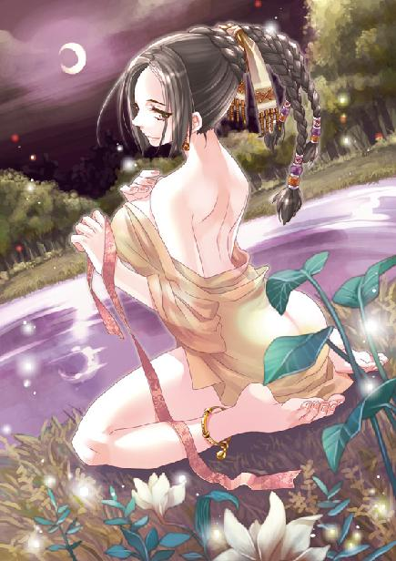
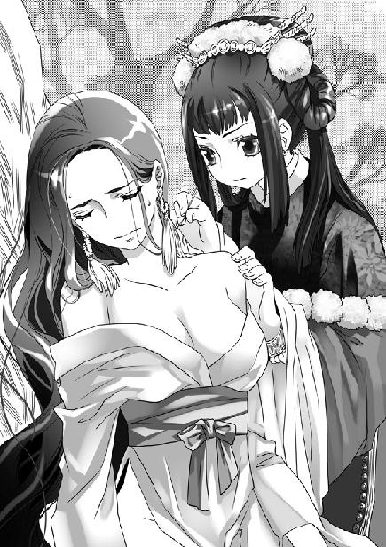
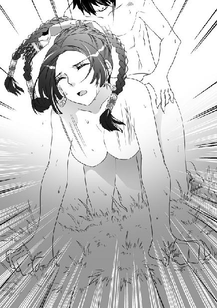

第6集·灵飞古镜
南荒篇（3/9）
出版日期：2010-01-15
【本集内容简介】
一只仿制遥控器引起程宗扬的注意，在向云苍峰详细探问六朝历史后，他赫然醒悟，这世界似是而非的怪异景象，根本就是众多穿越者造成的。这边一个岳武穆，那厢一个赵鹿侯，这些不道德的穿越者把历史弄得乱七八糟，害得他这个晚到的人想混点好日子都没处着手！
性情温顺的白夷人原来是兔子的后裔，这些兔子美是很美但中间却有很多兔儿爷，搅得初来白夷的一行人都要吐了！借着云氏商会与白夷的交情，苏荔准备联合白夷对抗鬼王峒……
※ ※ ※ ※ ※

封面人物：阿夕

插图：凝羽、乐明珠

插图：阿夕
一只手缓慢而坚决地按在祁远嘴上，将他的呼叫堵在口中。
那只手很干净，皮肤上有着阳光的味道，手指结实而灵敏。
祁远强忍着心底的恐惧转过眼睛。云苍峰和谢艺不知何时来到他身后。云苍峰长袍下摆卷起，掖在腰间，眼神一瞬间锐利如刀。掩住他嘴巴的是谢艺，那个温和的男子神态依然从容，甚至还对他微微一笑。
看到他的笑容，祁远狂跳的心脏莫名地安静下来，他慢慢呼了口气，控制住身体的战栗。
三个人屏住呼吸，眼睛紧紧盯住房门。
乌黑的发丝仿佛无数毒蛇，在门上蜿蜒着越伸越长。它们无声地游动着，攀住石壁上一支火把，发丝烟雾般缠住火炬，火焰随之黯淡，悄无声息地熄灭下来。
沉寂中，忽然传来“噗”的一声怪响。在火把上游弋的发丝猛然张开，然后快速拧成一束，朝声音传来处掠去。
声音传来的地方，朱老头趴在地上，用衣服蒙着头，屁股翘得老高，扯着呼噜睡得正熟。刚才那声怪响，却是他放了个屁。
这会儿谁也笑不出来。那发丝长得仿佛没有尽头一样，从门上一直延伸到朱老头身边。沉睡中的朱老头对即将来临的危险懵然无知，他在衣服里哼唧两声，咂了咂嘴，舒服地拱了拱屁股，接着又鼾声大作。
谢艺手指一根一根握住刀柄，整个人仿佛绷紧的弓弦，随时准备暴起发难。
就在这时，那些发丝却在离朱老头数寸的地方停下来，在空中停了片刻，然后慢慢退开。
祁远汗透重衣。旁边，云苍峰细缓悠长的呼吸一丝不乱，他一手按在祁远肩头，干瘦的手掌并没有多少力量，但那份镇定却让祁远不能不佩服。
另一边，谢艺黑色的瞳孔越来越亮，紧盯着发丝妖异的锋芒。
那些发丝纤细之极，仿佛一团朦胧的烟雾在半空浮动着。发梢悄无声息地微微旋转，似乎在搜索每个人的方位。祁远几乎能听到自己心跳的声音，像鼓点一样强烈。
沉寂中，一颗石块忽然呼啸着飞来，发丝灵蛇般昂起，发梢向前一探，缠住石块，其余的发丝受到惊动，波浪般同时舞动起来。
接着又是两颗石块飞来，发丝无声地分出两缕，将两块石头分别缠住。紧接着，一道身影“呼”地飞过，毫无顾忌地投入到潮水般滚滚浮动的发丝中。
祁远瞠目结舌。说起来，敢走南荒的都是响当当的汉子，但对这些妖异的发丝，祁远是打心底生出怯意——谁知道这是什么鬼东西？这家伙不知道是勇气十足还是够鲁莽，竟然就那么直冲过去，飞掠的身姿一往无前，没有给自己留任何后路。这份胆气，任谁也得甘拜下风。
待看清那人的样子，祁远下巴险些掉下来。那人头上蒙着一件破衣，竟然是熟睡的朱老头！
祁远回过头，只见程宗扬站在朱老头刚才躺的地方，没事人一样拍了拍手，然后咧嘴一笑。
这小子下手可真黑啊。祁远顾不上感叹，朱老头已经横飞过去，瘦巴巴的身体顷刻间被漆黑的发丝吞没。
蓄势待发的谢艺随即出手，他拔出腰侧的钢刀，旋身扑入飞舞的发丝中。那一瞬间，火塘昏暗的篝火映在刀上，犹如一片血光。
海藻一样生长着发丝的木门应刀碎裂，木屑像一群纷飞的蝴蝶，在凌厉的刀风下翩然飞开。
清冷的月光映入屋内，门外的院落空空如也，淡淡的月光水一样洒在地上，连影子都没有一个。
房门破碎的刹那，那些浮动的发丝宛如泡沫上流过的幻影一样，顷刻间消失得无影无踪。墙上的火把失去束缚，缓缓重放光明，仿佛什么都没有发生过。
谢艺平静地提着刀，目光像夜星一样明亮。在他身后，几个人面面相觑，不知道自己刚才看到的一幕是真是幻。
背后传来一阵鬼叫，却是被程宗扬扔出去的朱老头失去凭借，从半空重重掉落在地，摔得他一阵鬼哭狼嚎。
院中一个小伙子飞身跃来，人在半空已经张开弩机。祁远连忙过去挥舞着双手道：“没事没事！你们那边有动静吗？”
小魏利落地收起弩机，落在地上，“没。”
祁远还不死心，“刚才门外的是谁？”
小魏挠了挠头，“没见着有人啊。”
祁远回来摇了摇头，谢艺不言声地收起刀。程宗扬与云苍峰对视一眼，然后过去，朝地上的朱老头踢了一脚，“又做梦了？”说着蹲下身，一把掀开他蒙头的衣服。
朱老头愁眉苦脸地躺在地上，一手扶着腰背，哼哼唧唧道：“亲娘哎……就睡这么一会儿，俺这把老骨头咋就像散了架似的呢？”
“没散，结实着呢。”程宗扬把破衣服丢在朱老头脸上，“天还早，要三个时辰才吃早饭，赶紧睡吧。”
谢艺那一刀动静不小，屋里的汉子都坐了起来抓住兵刃。云苍峰和祁远分别过去安抚，只字不提刚才那诡异的一幕。
凝羽也坐起身，目光闪闪地看着程宗扬。程宗扬在她旁边坐下，笑道：“没事，我听到外面动静，以为有贼呢。”
“我都看到了。”凝羽平静地说道。
程宗扬瞄了瞄四周，低声道：“喂，那是什么东西？”
凝羽摇了摇头，“我不知道。”
程宗扬有些遗憾地说道：“可惜没看到谢艺的实力。你觉得，他跟你比怎么样？”
凝羽想了一会儿，慢慢道：“我看不透他。”
凝羽是第四级的实力。连她也无法看透谢艺的实力，那他至少已经进入第五级坐照的境界。
“我呢？”程宗扬开玩笑道：“刚才我扔朱老头那一把，有没有第三级的实力？”
凝羽一笑，揽住程宗扬的脖颈，让他枕在自己大腿上。
这会儿屋里还聚着二十多名汉子，凝羽就这么直接搂住他脖子，程宗扬虽然是现代人，也不免有些尴尬，心虚地咳了一声。凝羽丝毫无视旁人的目光，反而搂得更紧了。
鼻端充盈着女性的幽香，程宗扬下腹一阵冲动，阳具不由自主地勃起。不知道是不是长途行走和肢体的运动，使自己这个现代人越来越依靠身体的本能，他发现自己的性欲变得越来越强烈。与凝羽交欢，也经常有意犹未尽的感觉，有时刚在她体内发泄过，身体就又变得亢奋。
不过乐明珠的告诫言犹在耳，程宗扬只好闭上眼，按捺住升腾的欲火，枕在凝羽大腿上沉沉睡去。
云苍峰和谢艺也分别睡下，没有再理会那些发丝的去向。倒是祁远没有他们能沉住气，剩下的时间他连眼睛都没合一下，干脆抱着刀坐在门口，眼睛盯着屋后那间小房子，一边跟小魏有一句没一句地聊着，直到天色放亮。
住在小房子里的叶媪早早就起了身。她换了一身干净衣服，那头黑亮的长发梳得整整齐齐，衬着她满脸的皱纹，让人有种错觉，仿佛一张老媪的面孔和一名少女的长发合在一起。她笑着对祁远打了个招呼，神态间看不出丝毫异样。
朱老头披着那件破衣服蹲在门口，咬了根树枝在嘴里嚼着，正在吹牛，“我说的吧！有火塘有床铺有热水！石头，大爷可没骗你，这一晚睡得解乏吧？”
石刚怒道：“你的热水还是我烧的呢！刚转个身，你就拿去洗了。朱老头，你也太缺德了吧？”
“瞧你说的，”朱老头虎着脸道：“大爷什么都缺，就不缺德！咦？这门是咋回事？”
祁远咧嘴一笑，“风吹的。”
“这风可真够大的……”朱老头接了一句，接着又来了精神，“说起来这风也算不了什么。想当年我在海上，遇到那风——整个海里的水都吹得竖了起来！海底的珊瑚、珍珠……那些宝贝都露着，满眼都是！伸手随便捡！还有海底的龙宫，那瓦都吹得光溜溜的……”
祁远笑道：“朱老头，你使劲就往死里吹吧。小心闪了舌头。”
云苍峰跨出门，朝叶媪笑呵呵道：“昨晚几个手下不当心，撞坏了尊宅的大门。我让人给你重做一扇。”
叶媪倒不介意，含笑道：“那门早就朽了，家里没个男人，也没法收拾。劳你们费心，老身去给你们拿些吃的。”
云苍峰一手按住老媪的篮子，笑道：“山里打些粮食不易，咱们有带些干粮，不劳麻烦了。易彪，去砍些木头，把门修好。”
叶媪笑着收起篮子。这边程宗扬打着呵欠出来，看见叶媪，便笑道：“大娘这头发真漂亮。正好我带了把上好的黄杨木梳，就送给大娘吧。”说着将一把制作精美的雕花木梳递了过去。
叶媪接过梳子，脸上的皱纹笑成一朵花，连声道谢。忽然她眼睛一闪，看见后面的凝羽。
凝羽换了一袭白色的袍子，衣内仍套着皮甲。程宗扬要她不用那么累，南荒闷热的天气还衣甲齐全，凝羽只说已经习惯了，倒是衣外的斗篷很少再披。她长发用一条丝带束着，整齐地披在肩后，像黑色的绸缎一样滑软光亮。
叶媪拉起凝羽的手仔细审量半晌，苍老的眼中露出一丝伤感，“我女儿若是还在世，也该这么大了……”
凝羽轻轻一挣，却没能挣开，神情间有些不自然起来。
叶媪一笑，放开手，温言道：“这里僻静，没有外面那些事。姑娘若是遇上什么不顺心，来老婆子这里住上一段就好了。”
凝羽淡淡道：“多谢。”
程宗扬松了口气，凝羽那性子，真怕她当场翻脸。
叶媪不再言语，她把梳子插在发髻上，坐在门前，默默望着远处。
易彪等人手脚利落，又有祁远这个什么都懂一点的人在一旁指点，几个人刀削斧劈，不多时造了一扇木门出来，装在门框里。
祁远试了试门装得还结实，然后提着袋子到叶媪的住处，留够了盐巴，按照云苍峰的交待，没有多给。
朱老头精神不坏，口沫横飞地吹了半个时辰，把几个年轻人侃晕，才得意洋洋地住了口。他说得口干舌燥，过来涎着脸朝叶媪道：“大妹子，有水没？给口水喝喝。”
叶媪起身进了自己的小屋，拿了瓢水出来。朱老头眉开眼笑，没口子谢道：“大妹子真是好人儿，一看就是有福气的。老头我看得清，你命里注定是儿女双全、子孙成群！”
叶媪递过水瓢，笑眯眯道：“借你吉言。”
祁远听这家伙满口胡抡，连忙放下盐巴，把朱老头揪了出来。
朱老头还在咋呼，“咋了咋了？我说的有啥不对？”
程宗扬在他脑后拍了一记，“你闭嘴吧。”
商队的汉子牵过马匹走骡，束好货物，准备停当。众人向叶媪道了谢，然后上路。程宗扬道：“朱老头，怎么走？”
朱老头还在生祁远的气，一脸的不乐意，指着来路道：“回去，过了村子再说。”
程宗扬和祁远倒抽了一口凉气。
那村子看似平常，但一晚上没见什么人走动，连灯光也看不到一星半点，气氛说不出的诡异。再想到村口那个沾血的草结，几个知道的人背后忍不住发寒。出门在外，平安第一，这种险地最好能避就避。
朱老头得意起来，“看把你们吓的！这村子有什么大不了的？我走过没有一百次也有八十次了。”
“拉倒吧。”石刚抢白道：“我昨天才问过，人家叶大娘说这村子十几年没外人来过。”
程宗扬试探道：“咱们能不能绕过村子，正东面跟花苗人会合，再一道往南走？”
朱老头翻了翻白眼，嘴里嘘了两声，把颔下的山羊胡吹得老高。
祁远打量了一下周围，不禁苦笑起来。面前的村落依山而建，想绕过村子等于是在山里再开出一条路来，谈何容易。
※ ※ ※ ※ ※
昨天已近黄昏，众人急着投宿，没有留意村子的模样。这时天色大亮，众人才发现，眼前整个村子都被巨大的蕨类植物所覆盖，偶尔出现一座泥土垒成的房屋，上面也爬满各种藤蔓。村内一片寂静，没有任何人类和动物的声音，昨天遇到的几个村民，此时也不见踪影。
村口的四凶煞草结给众人心里留下浓重的阴影，队伍中没有一个人作声，各自牵着马匹闷头赶路。
走在前面的祁远忽然停住脚步，脸上露出怪异的表情。
“怎么了？”程宗扬赶过来，低声问道。
“瞧。”祁远用手指了指，小声示意。
路边放着一张刚砍下来的芭蕉叶，叶上放着三只用藤条编成的筐子。一只筐子摆着两块普普通通的石头；另一只盛着灰褐色手掌大小的皮毛，一块一块叠得整整齐齐；最后一只的物品很零乱，几件色泽黯淡的首饰，几粒石子串成的项链，还有十几枚古旧的铜铢。
程宗扬道：“这是干什么的？”
祁远还没回答，朱老头已经伸过头来，抢着道：“山里人不懂得怎么做生意，遇到商队路过，就把东西摆出来，人不露面。你看中就拿走，放着货搁在筐里。”
云苍峰下了马，低头看了看，忽然眼睛一亮，拿起一块石头。
那石头看上去就是普通的山岩，灰扑扑的不起眼，但一角却被凿开一小块，对着阳光一看，里面绿汪汪看不出有多深，竟是一块难得的璞玉。
云苍峰反复审视良久，呼了口气道：“程小哥，单是这块石头，贵商馆此行就不亏了。”
祁远似信非信地接过来，眼角也突地一跳，失声道：“龙睛玉？”
云苍峰点了点头。
程宗扬拿过来，只觉那石头沉甸甸地压手，外表看起来跟普通的砾石没有太多差别，但破碎的一角闪动着蓝绿的光泽，犹如苍龙的睛瞳。
“这东西值多少钱？”
祁远咧了咧嘴，“这东西可遇不可求，我见过有御法师把它琢成戒面戴在指上的，据说能让施法速度加倍。那价格，啧啧……指尖大小一块，就要好几百金铢，说不准还是被人用过的。”
手里的璞石足有拳头大，另一块虽然没有破口，但体积也不小，如果里面都是龙睛玉，可算得上是一笔横财了。
祁远道：“云老哥，这个怎么作价？”
云苍峰摇了半晌头，道：“老夫也没想到此行会遇上龙睛玉。我带的丝绸这些山民也未必想要，还是你们留着吧。把盐巴都放下，上面抹平，不要留尖。”
云苍峰指点说把盐巴抹平不留尖，祁远是知道的，意思是这点货并不足以支付璞石的价格，下次再来还要补偿。但几匹骡子驮的盐巴还有三百来斤，若都放下，祁远倒有些不舍起来。万一这璞石里并不是龙睛玉，或者只有看到的那么一层，拿几百斤盐巴换，那吃亏就大了。
程宗扬瞧出他的不舍，笑道：“怎么？怕上当？”
祁远苦笑道：“倒不是怕上当。山里人朴实，没有咱们那么多花花肠子。只不过我这心里总觉得不踏实……”
“不过几百斤盐巴，不如赌一把。”程宗扬对云苍峰道：“云老哥，这石头我们白湖商馆留着，到内陆再剖开，如果有赚头，咱们一人一半。赔了钱，都算我的。”
云苍峰道：“无功不受禄。我若拿了，那不就白捡五成利润？”
“怎么是白拿？如果不是云老哥的慧眼，我就是拿在手里也不识货。这五成利润，就当云老哥的鉴定费好了。”
云苍峰略一思索，展眉笑道：“那就却之不恭了。”
祁远在另一只筐子里翻了翻，“是些鼠皮。不值多少钱。”
程宗扬道：“也收着吧。放几样东西，不吃亏就行。”
说着程宗扬随手翻拣最后一口筐子。筐里的物品多半是山民从外面得来的，不知放了多少年头。几件首饰都黯无光泽，铜铢也锈迹斑斑。忽然他目光一闪，接着心头狂跳起来。
筐子一角放着一个不起眼的物体，它是一个不规则的长方形，黑色的表面积满灰土，背面光滑，正面排列着几行大小不一样的按钮——如果自己没有认错，这该是一支遥控器！
程宗扬心里怦怦直跳，脱口道：“这是哪里来的？”
祁远和云苍峰摇了摇头，都露出茫然的表情，显然从没见过类似的物品。倒是朱老头在旁看了两眼，老气横秋地说道：“这是山里人用的小东西，拿来砸核桃的。”
砸核桃？程宗扬彻底被震惊了。山里人砸个核桃还把工具做得这么讲究？
“老头儿，你不会以为这东西是……”
程宗扬还没说完，朱老头就拿过遥控器，抡起来往筐上一砸。
“……是铁的吧？”
“啪！”
遥控器背面的盖子松开，掉出两枚奇怪的电池。
“咦？”朱老头纳闷地说道：“咋这么轻呢？”说着抡起来还要砸。
“停！”程宗扬一把拦住他，不由分说地把那支酷似遥控器的物品抢过来，塞进背包，“这个我要了。”
璞玉被祁远贴身收好，那些不值钱的鼠皮随便塞进行李。商队把所有的盐巴都留在芭蕉叶上，顶部抹平。云苍峰又加了一串铜铢在上面，众人这才离开。
程宗扬紧紧捂住背包，脑中乱纷纷的，一时理不出头绪来。虽然看不出这件东西到底是什么物品，但它的形制、曲线、结构，握在手中的触感，无一不告诉程宗扬，这是一支自己最熟悉不过的遥控器。问题是它为什么会出现在这里？难道在自己之前，曾经有人穿越到这个世界？
程宗扬回过头。那个小小的村寨隐藏在群山间，周围都是莽莽大山，没有一条通往外界的道路。昨天他们开出的小路，只一夜时间，就被新长的藤蔓和蕨叶掩没。如果不是朱老头领着，谁也想不到这里还有人居住。
“老四，四凶煞是什么东西？”
祁远脸色微变，低声道：“当心，在南荒这可是禁忌，不敢乱说的。”他朝左右看了看，然后压低声音道：“四凶煞是南荒流传的四种恶鬼：炎煞、江煞、阴煞和虎煞。传说这四种凶煞在南荒山水间游荡，带来各种灾祸，平常人都避之不及。”
“那他们还扎了草结？”
“有些村子跟人结仇，被欺负得狠了，把整个村迁到山里，全村人都拜这些凶煞。那些草结是用来给凶煞指路的，指望它们帮自己复仇。这些村子的人怨气大，把外面的人都当了仇人。外人不知底细，进了村子，少有能活着出来的。”
祁远心有余悸地呼了口气，“咱们算是运气好，没沾惹到村里的人。”说着又不放心地去摸那块龙睛玉。
凝羽仍骑在马上。她的伤势远比预料得严重，三天来仍没有多少起色。那天她与鬼王峒武士缠斗了一日一夜，虽未受伤，但真元几乎耗尽。当日西门庆留在她体内的阴寒之气，已经在她子宫内蛰伏良久，与程宗扬交合时，这股阴寒之气已蠢蠢欲动，但因为程宗扬真阳太过浓郁，将它强行克制下来，未曾发作。她真元一弱，这股阴寒之气趁机肆虐，重创了凝羽的经络。
花苗新娘给凝羽留了几丸丹药，用来调理她受创的经脉，但凝羽丹田的气息仍是一片紊乱，即使再过十余日也未必能够运用自如。
凝羽回过头去，远远看到那老媪坐在那幢孤零零的石屋前，篮子放在手边的地上，那头光亮的长发散在膝上，一手挽着，一手拿着那把黄杨木梳慢慢梳理。
与凝羽目光一触，那老媪满是皱纹的脸庞慢慢笑了起来，嘴唇轻动着，仿佛在说着什么。
凝羽无由地感到一阵恶寒，整条脊骨都仿佛浸在冰冷的水中，忍不住娇躯发抖。
“怎么了？”程宗扬一把扶住摇摇欲坠的凝羽。
凝羽咬住发白的唇瓣，良久摇了摇头。
程宗扬松了口气，“你看你，还说能撑得住呢，差点就摔下来了。”
凝羽不敢回头再看，但身后叶媪那两道目光像冰刺一样，仿佛要穿透她的背脊。
※ ※ ※ ※ ※
林间远远传来花苗人用树叶吹出的哨声。祁远扯了片叶子，用哨声回应。
“他们在林子里等。”祁远脸色发黄地苦笑道：“早知道我也不进村了，一晚上都没合眼。”
朱老头兴致不错，骑着他的瘦驴眉飞色舞地说道：“昨晚我可做了个好梦，梦到一个仙女从天上飞下来，死乞白赖要给老头我做老婆。仙女头发那个长啊，味道那个香啊……我飞啊飞啊……”
吴战威砍开一片巨大的蕨叶，笑道：“你不会是梦到姓叶的老太婆了吧。”
朱老头吭哧几声，恼羞成怒地说道：“胡说！”
祁远道：“朱老头，你那会儿说人家儿女双全、子孙成群——那不是当面骂人家的吗？”
“咋是骂人呢？咋是骂人呢？”朱老头不高兴地嚷嚷道：“我说的不都是好话吗？”
“好话？”祁远嗤了一声，“人家无儿无女，老公也早死了，你还说她往后儿女双全，那不是找骂吗？”
朱老头悻悻然说道：“老公死了怎么着？难道不能再嫁？”
“成，你去跟她说去。”
朱老头哼哼两声，“说就说！俺走南闯北几十年，怕过什么！”说着他忽然两手抱住肚子，惨叫一声：“哎哟……我的亲娘哎……”
朱老头从驴背上滚下来，捂着肚子连滚带爬钻进蕨丛，片刻后“澎”的一声闷响，一股臭气弥漫着飘来。
“呸！呸！”吴战威等人笑骂道：“朱老头，要出恭你也不滚远点儿。”
朱老头在蕨丛里“哼哼唧唧”老半晌，才勉强提着裤子出来。他那张瘦脸颜色发青，一边走一边弯腰吃力地捧着肚子，哼哼道：“亲娘哎……这是吃着啥东西了？差点把肠子都拉出来……”
“该！”石刚道：“把一肚子的坏水都拉出来，你就消停了。”
朱老头用手指戳着石刚，“石头，你就学坏吧，我这么大岁数，还咒我，缺德不缺德啊……哎哟！”
一句话没说完，朱老头又提着裤子，屁滚尿流地钻进蕨丛。
众人一阵轰笑，祁远也龇了龇牙，笑容却有些发僵。
还没走到花苗人的地方，朱老头就拉了五六次。最后一次从林子里出来，老头连腰都直不起来，眼窝也陷了下去，走路直打晃。
程宗扬道：“云老哥，情形有些不对啊。”
云苍峰拈须低笑一声，“这就对了。朱老头这会儿吃点苦头，总比糊糊涂涂送了命强。”
“是姓叶的老媪做的手脚？”祁远道：“万一朱老头拉肚子走不动路，咱们陷在这大山里，可就麻烦了。”
云苍峰摇了摇手，“不妨。那老媪若是动了杀心，他岂能活到此时？如今只是拉拉肚子，这朱老头已经是运气了。”
朱老头死狗一样趴在驴上，只剩下哼哼的力气。石刚把水囊递过去，“早上烧的热水，还温着呢，喝一口。”
朱老头哼哼道：“石头啊，我就知道你心好……这水大爷不喝了，给大爷拿点酒……”
石刚气不打一处来，“都这份儿上了还馋酒，泄死你拉倒！”
面前的蕨叶忽然“哗啦”一声倒了下去，一名胸口刺着纹身、肩膀包着绷带的精壮汉子现出身来。
“卡瓦！”程宗扬叫道。
赶来接应的花苗汉子一笑，露出一口雪白的牙齿，“山神庇佑，我们打了一头野猪，已经烧好在等你们。”
林中的空地上生起一堆篝火，上面架着一头比牛犊还大的野猪。武二郎赤膊立在火边，正拎着刀，两眼紧盯着火候，将烤透的猪肉一片片切下来，挑在蕨叶上。
这厮在商队里属于油瓶倒了都不扶的主儿，和花苗人在一起立刻换了副嘴脸，殷勤得令人齿冷。程宗扬讽刺道：“二爷，勤快啊。”
武二郎“嘿嘿”笑了两声，对程宗扬的嘲讽毫不在意，显然心情不坏。
程宗扬笑眯眯道：“二爷这是给花苗当上门女婿了？往后不打算跟咱们一起走了吧？”
武二郎小心切下野猪后腿一块烤得金黄油亮的好肉，对跃跃欲试的阿夕道：“这是给族长的，别碰！”
阿夕哼了一声，又白了程宗扬一眼，嘟着嘴走开。
武二郎这才说道：“反正顺路，到了白夷族再说。”
“什么叫到了白夷族再说？”
武二郎不耐烦地说道：“反正误不了你的事。喂，再给我一个银铢。”
这些日子程宗扬大致了解到货币在这个世界的购买力。在南荒一枚银铢差不多能买一百斤稻米，或者够一个人一个月基本生活费用的开销。事实上南荒流通的大多是成串的铜铢，每串一千枚，称为一贯。由于银铢稀少，一枚银铢差不多能换一百一十枚铜铢，比内陆的折换率还高了百分之十。
程宗扬戒备地说道：“做什么？”
“少废话，给不给吧？”
“不给！”
见程宗扬态度坚决，武二郎软了下来，“大不了二爷多给你干一个月。快点儿，二爷有急用。”
“急用个屁啊！这荒郊野外，你拿银铢往哪儿花？”
“你管我呢！有用就是有用，就一个！”
正说着，一个女子从林中出来。她身材颀长，细腰丰臀，凤目红唇，容貌比鬓侧的鲜花还要艳丽。她披着一条崭新的丝绸，整匹缎子没有裁剪，绸端从肩头绕过，然后从背后横缠，裹住高耸的酥胸，再从腋下折了一弯，斜着从白滑的腰肢掠过，束在腰间。绸尾低垂地掩在她修长的小腿中央。
那匹丝绸是纯白的颜色，上面绘着一朵硕大的牡丹花，花枝金红交错，色彩艳丽夺目。这样的丝绸只能用来做外衣，丝绸质感强，又是白色，若是身材略差一些，皮肤稍暗一些，都难以穿出那种华美的效果。而花苗的女族长却把这丝绸当成亵衣，直接拿来贴身穿着。她身材出众，雪白的肌肤与丝绸华丽的光泽交相辉映，未经裁剪的绸缎随便往身上一披，就仿佛是给她量身定制的一样精美绝伦，衬着她雕塑一样艳丽的五官，更显得体态丰秾合度，雪肤花貌艳光四射。
程宗扬羡慕地悄声道：“武二，原来你拿了我的丝绸，是讨好族长来了。看不出你这家伙傻大黑粗的，竟然还有这种手段。好艳福啊，武二。”
武二郎得意洋洋地说道：“你以为呢。”接着又虎起脸，“给个银铢！不给就抢了啊。”
“我就不明白了，这鬼地方有钱也花不出去，你要银铢干嘛？”
说着程宗扬目光一闪，看到苏荔胸侧嵌着一枚亮晶晶的物体。那丝绸一角掖在她胸口，两团饱满而充满弹性的乳峰高高耸起，露出胸部白嫩的乳肉。上次给武二郎的那枚银铢，这时就嵌在她胸侧丝绸交叠的地方。银铢中间打了个圆孔，被做成一枚钮扣，防止丝绸光滑的表面从胸前滑脱。
“哦！原来……”程宗扬竖起手指，一瞬间恍然大悟。
武二郎一把捂住程宗扬的嘴，飞快地朝四周看了一眼，压低声音说道：“别说！”
武二这厮看起来生猛，心思可够活的。看到花苗人对丝绸的喜爱，这厮就动了心，从程宗扬手里敲了匹上好的丝绸来讨好苏荔。苏荔果然爱不释手，地处荒郊，无处裁剪，她直接拿整匹丝绸做了衣物，大大方方就穿了出来。
丝绸本身柔软光滑，既没有系带又没有扣眼，根本无法固定。武二好人做到底，把自己唯一一枚银铢拿出来，送给苏荔作钮扣。但银铢只有一枚，这会儿只系了丝绸上面一角，下面还没有系。也就是说，苏荔丝绸下面的身子都是光着的。这也难怪，对于生长在南荒的蛮夷来说，多半还没有内裤的概念。
程宗扬忍笑摸出一枚银铢，低声道：“武二，这扣子不会是你帮她系的吧？手可够巧的。”
武二郎一把抢过银铢，手一挥，把程宗扬扔了出去。好在程宗扬现在身手比当初来的时候敏捷了许多，落地晃了两步，总算没有当场出丑。
抢到银铢，武二郎立刻摇头摆尾地跑过去找苏荔。苏荔笑着接过银铢，两人一同走进树丛。
再出现时，苏荔下身的丝绸已经折成裙状，绸尾从裙内掖起。那枚银铢缀在她腰侧，上面打了孔，用细皮绳穿着。
程宗扬远远朝武二郎竖起拇指，又比了个不怀好意的手势。武二郎扬起脸，只当没看到。
接下来一连几天，众人都在朱老头带领下跋山涉水。这一路都是没有人迹的荒野，即使云苍峰这样的老江湖也没走过。除了前几天那个挂着四凶煞的村子，再没有遇到半个生人。
随着往南荒腹地的深入，身边的景物也不住变化。连绵的山脉阻挡了潮暖气流的进入，蕨叶丛生的雨林渐渐被裸露的红土所代替，土地的贫瘠使植被渐渐稀少，不多的灌木也越来越矮，这里每一寸土地都仿佛从来没有人行走过，充满了洪荒气息。商队行走在寂寥的荒野中，身后只有一串零乱的脚印，仿佛他们是这片天地间唯一的行人。
朱老头拉了两天才止住，整个人像是丢了半条命，整天有气无力地趴在驴背上，一副要死不活的样子，不过一到吃饭的时候就精神抖擞。
“人是铁，饭是钢！”朱老头振振有辞地说：“我老人家活这么大岁数，靠的就是胃口好！甭管什么病，只要放开吃，都能降得住！小程子，这可是我老人家的不传秘方，你可记住了，千万别告诉旁人。”
“你就放一万个心吧。我丢不起那人。”程宗扬没好气地说道：“朱老头，这都是第五天了，咱们这会儿在什么鬼地方？我可打听过了，白夷族那地方山清水秀，这荒山野岭的，连耗子都没有，你不是领错路了吧？”
“你听谁说的？”朱老头嗤之以鼻，“白夷那地儿就是个大水池子，挨着个破山，什么山清水秀？那不扯的吗？”
程宗扬没打算跟他争辩，“问题是咱们离白夷族还有多远？你没见云执事那么稳重的人，这两天都有些着急吗？”
朱老头大咧咧道：“他急不急的，关我屁事。”
程宗扬道：“恐怕还真关你老人家屁股的事。如果耽误了我们办事，云执事一怒之下，往你主子那儿告一状。嘿嘿……”
朱老头脸上变色，小心说道：“不会吧？云执事可是个厚道人啊。”
程宗扬拍了拍他的肩，安慰道：“放心吧。他厚道，我不厚道。向导的钱我还出了一半呢。一天二十个银铢，你怎么不去抢呢？”
朱老头苦着脸道：“我不就是想多走两天，多挣点儿钱当棺材本吗？”
“这会儿说实话了？”程宗扬道：“我就看着你这老家伙不老实，带着我们在山里瞎转呢。一句话，明天到不了白夷族，你的棺材本儿就可以省了。咱们直接刨个坑，把你一埋，要什么棺材。”
“要去白夷族还不简单？”朱老头突然间振作精神，快跑几步蹿上驴背，扯开喉咙喊道：“快跑啊！过蛟了！”
众人正沿着一条干涸的山涧行走，脚边只有一股涓涓细流。朱老头突然来这一嗓子，大伙儿都是一惊。程宗扬正要开骂，却见清澈的溪水像混了泥沙一样，突然变得浑浊。紧接着，一阵闷雷般的声音从上游传来。
众人立刻反应过来，花苗人动作最迅速，四名汉子猿猴一样攀上河岸，将族人一一接应上来。戴着面纱的新娘裙子太长，不小心绊住，险些摔倒，被苏荔一把扶住。
白湖商馆剩下的人已经不多，但一半都是走过南荒的，动作也不慢，祁远、吴战威、小魏分别拽着一名奴隶爬上了河岸，又拽住骡马的缰绳往岸上扯。云氏商会的军士虽然训练有素，却没经历过山洪，突遇变故，他们都习惯性地望向易虎，等待首领的命令，动作反而落在了众人之后。
易虎迅速发出指令，易彪背起云苍峰，手脚并用爬到河岸高处，接着军士牵着马蜂拥上岸。忙乱中，两名军士落在后面。那阵闷雷般的轰鸣越来越近，已经上岸的易虎喝道：“弃马！”一边跃了下去。
身在半空，易虎就展臂挥出背后的尖枪。一名军士扬手攀住枪杆，易虎腰身一拧，将他甩到岸上。这边易彪也跳了下来，河道里还有几匹骡马没来得及拉上来，他一把扯断马匹的背带，将货物甩到岸上，然后去扯另一名同伴。
程宗扬已经牵着黑珍珠上了岸，凝羽一手挽住缰绳，一手扶着他的肩膀。奔腾的水声越来越近，仍留在河道里的马匹都嘶鸣起来。接着一股混着泥土红色的河水从河道拐弯处冲出，仿佛狂奔的烈马，吼叫着闯入河道，将两侧的岩石都带得滚到水中。
水一向给人温柔婉静的感觉，然而一旦形成山洪，却有着山崩地裂的威势。刚才还是涓涓细流的小溪水位一瞬间升到丈许高，奔腾的怒流仿佛要将脚下的河岸撕碎。巨大的轰鸣声震耳欲聋，令人为之色变。
易虎已经挺枪刺进岩缝，只需要一纵身就能上岸。而易彪和那同伴还留在河道间，身后就是一人多高的洪峰。易虎吸了口气，把尖枪从岩缝中拔出，迎着洪水跃去，抬枪一挑，枪锋准确地从易彪腰侧刺过，穿透他衣内的战甲，接着力贯双臂，将易彪高大的身体甩了起来。
山洪来得极快，易彪还在半空，浪头已经卷过他刚才立足的位置。那名没来得及上岸的同伴身影一晃，像根稻草般被山洪卷走。易虎本来还有机会脱身，他却大喝一声，手臂陡然伸长尺许，从水中将那名军士捞出，抛到岸上。
那军士苍白而年轻的面孔一闪而过，与云氏商会的其他护卫相比，他身材单薄了许多，人在半空，他四肢徒劳地挣扎着，想抓住什么凭借。
山洪卷来，易虎沉腰坐马，脚下使出千斤坠，钉子一样牢牢钉在土中，挺身硬生生挨了洪峰一击，脚下没有挪动分毫。
众人紧悬的心脏略微松懈一些。易彪张臂抱住那名军士，推到河岸高处。他顾不上喘息，就返身去接应易虎。就在这时，一块半人大小的岩石夹在浑浊的浪花中，从上游滚下，重重砸在易虎胸口。那名剽悍的汉子闷哼一声，嘴角涌出一股血丝。就在众人注视中，易虎雄壮的身躯慢慢向后坐倒，随即被洪水吞没。
易彪冲到岸边，奋不顾身地想要跳下去，却被吴战威拦腰死死抱住，吼道：“你想死啊！”
浪头打在岸上，脚下的山岩也仿佛在抖动，众人纷纷往高处躲避。水流漫过河岸，只有易彪和吴战威两个在齐膝深的水中扭打着。
良久，易彪不再挣扎，他跪在水边，虎目紧紧盯着洪水。那名被易虎舍命救上来的军士浑身都湿透了，在岸上身体发抖。
山洪来得极快，去得也快。前后不到二十分钟，汹涌的洪峰就奔往下游，只留下满是泥沙的河道。留在河道里的几匹健马走骡都被洪水卷走，其中一匹战马被冲到岸边的乱石上，浑身的骨骼都被撞碎，蜷成一团。
吴战威低声道：“别看了。说不定已经冲出了一二十里。”说着他咧了咧嘴，“走南荒是刀口舔血的勾当，比的就是谁命大。运气不好，二十年后还是一条好汉！”
“他是我哥。”易彪的声音像破了的风箱一样沙哑。
吴战威去拍他肩膀的手僵在半空。
云苍峰微叹一声，“南荒之行九死一生，但贵主人心意已决……”
易彪久久跪在岸边，最后他重重磕了个头，站起来抹了把脸上的水迹，头也不回地朝岸上走去。
※ ※ ※ ※ ※
朱老头逃得最快，山洪还没到，他已经钻到一处山坳里，把自己藏得严严实实。等山洪退去，他才伸出头，余悸未消地说道：“好厉害！好厉害！”
程宗扬咬牙道：“死老头，知道有山洪，还带我们走山涧！”
“天地良心啊！”朱老头叫道：“几天都没下雨，我怎么知道会过蛟？”
吴战威也有些纳闷，“没下雨怎么有山洪？”
“这是旱蛟。”祁远道：“山里人把发山洪叫过蛟。下雨发的山洪叫水蛟。有时候上游下雨，河道被堵住，隔了几天才冲下来。山里人说那是蛟龙被困在山上，渴极了往山下找水，叫旱蛟，比平常的水蛟更厉害。”
“就是！就是！”朱老头连连点头。
易虎和一名奴隶被山洪卷走，尸骨无存。骡马损失了五匹，相比之下，货物损失得倒不太多。此时河道被水冲过，泥泞得无法行走——见识过山洪的威力之后，也没有人再有勇气去走山涧。
朱老头一路上尽吹自己有先见之明，若不是他老人家见机得快，喊得及时，在河道里的有一个算一个，谁都没跑。
众人都心情郁郁，没人理他，倒是阿夕心直口快，“若不是你，我们也不会撞上过旱蛟。”
朱老头涎着脸道：“丫头可别乱说。要不是我，你们能找到路吗？再说了，我老人家说话的时候，有你插嘴的份儿吗？”
阿夕手指刮着脸皮，“老不羞！”
“嗨，你这丫头，当心将来嫁不出去！”
阿夕气得嘟起嘴。她忽然一笑，眨了眨眼睛，用蛮语甜甜称呼道：“阿普，你的驴子背上是什么东西？”
“啥？”朱老头扭过头。
阿夕白白的小手一指，只见他那头瘦驴屁股上趴着一只张牙舞爪的蝎子。驴子似乎觉得有些痒，不满地摇了摇尾巴，那蝎子受到攻击，立刻举起尾钩，狠狠钉进驴臀。
驴子嘶鸣一声，暴跳着把朱老头掀下驴背，三下两下跳进灌丛。
朱老头摔得灰头上脸，一手扶着腰，带着哭腔喊道：“我这腰……亲娘哎……”
阿夕拍着手，咯咯笑道：“活该！让你乱说！”
程宗扬回过头，发现谢艺正在看着自己。两人目光一触，那个男子便像春风一样和煦地笑了起来。
“刚才朱老头喊的时候，我看到谢兄已经先一步上了岸，”程宗扬似笑非笑地说道：“莫非谢兄以前也遇到过山洪？”
谢艺点了点头，“这些年来，我走过很多地方。山洪、雪崩、海啸……都遇到过。我曾经在雪山顶上，见到一头死去的豹子。积雪间，它的皮毛仍像活着一样光亮，让人不敢惊动。在大海深处，我遇到过一群迁徙的鲛人。他们用海底采来的明珠，来交换我们携带的鱼叉。几乎每一次长途旅行，我都目睹过同伴的死亡。”
隔了一会儿，谢艺低声道：“但最美的风景，永远都在最难靠近的地方。与天地间的美丽相比，我们的生命显得那么渺小。”
程宗扬品味着他的话，没有心情再去探究他的底细。良久，程宗扬道：“谢兄可见过这个东西？”
程宗扬打开背包，拿出那支遥控器。
这件物品这些天自己已经看过无数遍，越看越觉得难以理解。它比普通的电视遥控器小了一半，显得更为袖珍。不知道是因为年代过于久远，还是本身就没有刻印，按键上没有任何字迹。程宗扬只能猜测较大的一个是开关键，中间排列整齐的那些是数字键，两个长一点的，像是音量和频道控制键。这种形式的物品自己以前已经见过太多了——它和一支典型的电视遥控器在结构上完全一样。
谢艺仔细看了看，然后摇头道：“没有。”
程宗扬不知道自己该高兴还是失望。连谢艺都没见过，看来这个世界认识它的人真的不多。
但问题是这并不是一支真正的遥控器。它的材质很奇特，不是通常所见的工业塑料，而是一种类似金属的物体，很轻但很坚固。朱老头砸的那一下，没有在它表面留下任何划痕。至于那两枚“电池”，只能说它们做得很像电池，虽然有正极和负极，但材料并非金属，而更近似于一种矿物质。
这是一件仿制品。程宗扬得出结论。
而这个结论比它是一件真品更让程宗扬怀疑。究竟是什么人，出于什么目的，而仿制了一支在这个世界不可能使用的遥控器？
唯一的解释，也许是在自己之前，已经有人穿越到过这个世界。程宗扬猜测，那位穿越的前辈大概是一位资深宅男，出于对生命中美好事物的深刻怀念，而仿制了这支遥控器作为纪念。
那位穿越者的心态不是程宗扬所关心的问题。最重要的是，除此之外，他还留下了什么痕迹？
※ ※ ※ ※ ※
“云老哥。”
上了年纪的人经历一般更为丰富——当然，朱老头那种年纪都活到狗身上的不算。
程宗扬攀谈道：“六朝历史上，出过什么杰出的英雄人物？”
云苍峰牵着马徒步走着，“程小哥可知道千古一帝？”
程宗扬试探道：“是……秦始皇？”
云苍峰点头道：“春秋以降，是为战国。七雄纷战不已，及至始皇帝，奋六世之余烈，东破六国，威加海内，人称千古一帝！但要说英雄……还要数大秦的赵鹿侯！”
程宗扬脑中有些发晕。大秦赵鹿侯？是哪位英雄？
“始皇帝驾崩，天下大乱。当时势力最为强大的，莫过西楚霸王项羽。巨鹿一战，大败秦军二十余万。楚军趁势西入函谷关，兵围咸阳。秦军百战之师土崩瓦解，围城之日，又值二世皇帝晏驾，天下都以为秦失其鹿，楚将得之，国祚覆亡在即。”
云苍峰声音变得激昂起来，“赵鹿侯当时只是宫中区区一个内侍，却杀伐决断，先诛权臣李斯于咸阳闹市，再拥立始皇之弟子婴为秦三世，又率敢死之士千余，夜袭楚军，在渭水之畔大败霸王项羽。收大将韩信，复关中之地，最后大战垓下，迫使霸王乌江自刎。以一人之力，挽狂澜，存社稷，可谓英雄！”
这段诡异的历史听得程宗扬目瞪口呆。他敢发誓，自己学过的历史上绝对没有这段狗屁倒灶的内容。
难怪自己在王哲军中会看到秦军的身影，原来在这个世界的历史中，秦国并没有灭亡。而秦国之所以没有灭亡，是因为秦始皇死后，秦国又出了个赵鹿侯，带领秦军绝地反击，不但保全秦国，还逼得楚霸王自杀。
问题是，这个赵鹿侯是怎么蹦出来的？
“鹿侯非但战功显赫，文治更为出众。他以法家为宗，车同轨，书同文，行郡县之制，遗泽一至于今。”云苍峰道：“秦三世以鹿侯功高，拜其为王，鹿侯推辞不就，只拈鹿为号，请封鹿侯，随即退居终南山。至今秦国仍将其牌位供奉于宗庙之中，累代祭祀不绝。”
说起古时贤达的风节，云苍峰慨叹不已。程宗扬的表情却像打电动时遇到电脑作弊一样不可思议。这个赵鹿侯竟然把秦始皇的功劳都据为己有，什么书同文，车同轨……脸皮厚到这个地步，也太过分了吧？
程宗扬费力地清了清嗓子，“云老哥，你说的赵鹿侯……他叫什么名字？”
“鹿侯乃赵国世族子弟，弃家入秦，三十岁之前无籍籍名，至此一鸣惊人。鹿侯遂以赵为氏，单名讳高。”
赵高……我就知道是那个死太监！
程宗扬在心里骂道：就是你们这些不讲道德的穿越者，把正经历史搞得乱七八糟，让我想作弊都没有机会。逼死霸王……你怎么不去抢了虞姬呢？
哦，他穿越成了太监……
程宗扬打了个寒噤。当初带着情趣内衣穿越，他认为自己已经够倒霉了，没想到还有比自己更倒霉的。想到这里，他不禁对云苍峰击节赞叹的这位大英雄生出一丝同情。这位前辈能咬牙坚持下来，还真是挺不容易……
“既然这样，”程宗扬小心翼翼地问道：“怎么会有汉呢？”
云苍峰狐疑地看了他一眼，“程小哥不知道汉高祖？”
“是斩白蛇起家的刘邦吗？”
“不错。汉高祖刘邦本是霸王麾下，入汉中被封为汉王，赵鹿侯击破楚军，唯有高祖一军独全。霸王乌江败亡，高祖遂以汉为号，率军暗渡陈仓。赵鹿侯闻讯，挥师回援。秦军转战千里，汉军以逸待劳，本来负多胜少，但赵鹿侯慧眼识英才，从霸王弃将中提拔出大将韩信，一连数战，汉军竟然没占到半点便宜。两军相峙数月，最后赵鹿侯在鸿门设宴，邀高祖赴会。”
云苍峰脸上露出笑容，抚掌道：“这一场鸿门宴可谓是千古绝唱。高祖仅带谋士张良一人赴会，赵鹿侯于屏风后暗伏刀斧手，拟以掷杯为号，谋刺高祖，并且严令军中戒备，不许一人逃脱。”
程宗扬暗道，那个穿越的赵鹿侯肯定是读过鸿门宴，决心在他创造的历史中完成项羽未能完成的事业——干掉刘邦。赵鹿侯吸取了项羽失败的教训，还抢在刘邦之前收服了韩信，难道刘邦还有机会逃命吗？
云苍峰抚掌道：“谁知高祖席间借口尿遁，暗中潜入韩信帐中，只用了一句话，便说服韩信举兵反秦。赵鹿侯功败垂成，遂闭关自守，不再有东进之意。”
程宗扬愣了一会儿，“他说了一句什么话？”
“事成，以汝为齐王。”
程宗扬瞠目结舌。
赵鹿侯这个拿着通关秘籍的穿越者也没能斗过刘邦？谁能想到，天才的政治流氓刘邦只用了一张空头支票，就骗走了政治盲韩信。
难怪赵鹿侯会退居终南山。他这个穿越者也被卷入历史的洪流，已经改变的历史脱离了他的掌控，按着强大的惯性向着没有人能够预料的方向发展。这足以让任何一个穿越者心灰意冷。
忽然朱老头在前面叫了起来，“这边！这边！”
吴战威的声音道：“老头，你没看错吧？这山洞就是你说的路？”
朱老头乐呵呵道：“跟我走你就放一万个心吧，错不了！”
“阿普，”苏荔的声音响起：“山神不会让人从它身体里走过。南荒像蛛网一样的山洞，就是山神的宠儿白尾豹也会迷路。”
争执间，程宗扬已经与云苍峰赶了过来。
眼前是一个一人多高的山洞，洞口虽然不大，却黑沉沉看不到底。武二郎探进半个身子，运足目力看了看，哼哼两声，没有开口。谢艺牵着他的坐骑，远远看着，脸上看不出表情。
“怕什么！有我呢。看到这山没？”朱老头口沫横飞地说着，一边指着面前巍峨的山峰，“要从山上过，至少要六七天！也就我老人家知道这条捷径，能从山洞直接穿过去。哼哼，要不是为了那一个金铢，我老人家才不告诉你们这里的捷径呢！”
云苍峰与程宗扬对视一眼，然后慢慢将袍角掖到腰间，“走吧。”说着当先踏入山洞。
火把的光亮下，水潭犹如一块宝石，散发出幽蓝的光泽。一群近乎透明的小鱼在水中轻灵地游曳着，荡出一圈圈大大小小的涟漪。
地下水无数年来的冲刷，在大山中形成一个庞大的溶洞群，四通八达的洞穴连接在一起，密如蛛网。任何一点声响都在这密闭的空间中无数次回荡，让人辨不出究竟是什么地方传来的声音。
一路上，所有人都闭住嘴，默不作声地赶路。那些花苗女子雪白的小腿在黑暗中此起彼伏，留下细碎的铃声。戴着面纱的花苗新娘被她们簇拥在中间，安静得像一名淑女。
程宗扬已经知道花苗新娘是冒充的，那个叫乐明珠的小丫头又天真又可爱，说话解闷倒是个好对象。可惜只那晚在蕈子林见过一面，剩下的时间那些花苗女子始终与她同行同宿，一直没有聊天的机会。
这山洞不知有多少年没人走过，越往里走，空气中的含氧量越低，进入山洞一个时辰之后，几个体弱的奴隶已经几乎晕厥过去。
当那些护卫也快支撑不住的时候，朱老头领着众人钻进一个狭小的洞口。在经过一段地狱般的路程之后，眼前出现了一个巨大的岩洞。
这洞穴面积足有两个足球场那么大，气流从几道石隙间喷出，带来清新的气息。这一路走过来，每个人胸口都仿佛压了几块沉甸甸的石头，用来照路的火把也因为缺氧而熄灭，只剩了一支还亮着。清风一吹，众人如释重负，不等朱老头开口，就挣扎着走过去，倒坐在地。
众人坐在水潭边，大口大口喘着气，一个个脸色苍白。山洞里辨不出昼夜，众人感觉像走了一整天那么久，手脚都如同灌了铅，疲惫已极。程宗扬也眼冒金星，两耳作鸣。他坐下来，背后靠着一根不知生长了几百万年的石笋，按照凝羽所说的功法，两手拇指、中指相扣，勉强催动丹田的气轮。
体内的真气沿经络行走，周而复始。渐渐的，胸口沉闷的感觉一丝丝散开，呼吸变得顺畅。程宗扬振作起精神，睁开眼睛，面前是一张枯树皮般的老脸。
程宗扬本能地一抬头，脑后“砰”地撞在石笋上，撞得他眼前一阵发黑。
“死老头！你变态啊！”程宗扬捂着头怒道。
朱老头“嘿嘿”笑了两声，模样要多猥琐有多猥琐，就像他那瘦驴。那头驴被阿夕拿蝎子狠狠蜇了一下，虽然苏荔拉着阿夕道了歉，又找来草药敷住伤口，但走起路来还是一瘸一拐，让朱老头心疼得唠叨了一路。
“那个——天儿也不早了。小程子啊，咱们说好了的，一天一个金铢，你瞧……”
朱老头是棺材里往外伸手——死都要钱。说好的每天一个金铢，先付一半，剩下的到了地方再付，可这老家伙每天都来软磨硬泡，要拿他当天的一份，每次都碰一鼻子灰，却始终痴心不改。
这次算让他等到了。程宗扬扬着脸琢磨了一会儿，居然破天荒地拿出一枚银铢来。
朱老头看到这多赚的一份，笑得眼睛都眯成一条缝，连忙伸手去接，程宗扬却把手移开。
“朱老头，那个砸核桃的东西，你在别处还见过吗？”
“见过见过！”朱老头把头点得飞快。
“在哪儿？”
朱老头道：“山里多得是！”
程宗扬对这老家伙的信口开河深具戒心，“真的？先说好了，你要再给我胡扯，咱们就一拍两散，我重新雇人当向导。一天一个金铢，鬼巫王他老爸我都能雇来！”
朱老头翻着眼想了半晌，犹豫道：“好像是在……太泉？”
“太泉？”程宗扬听着有点耳熟。
忽然程宗扬心头一震。王哲托他的三件事里，其中一件就提到苍澜的太泉古阵。那究竟是个什么地方，让王哲念念不忘？
朱老头最擅长察颜观色，看出程宗扬对太泉古阵并不熟悉，口气立刻大了起来，“那地方最多这种怪模怪样的东西！山里人拿来砸核桃、打院墙、叠猪圈……”
程宗扬没理会他的瞎扯，问道：“太泉在什么地方？”
“西边的大山里，叫什么苍……”朱老头拍了半天脑袋，最后道：“反正是个挺邪门的地方。据说山里的狐狸、野獾什么的进去，就会变成妖精。”
程宗扬没心情再听下去，将那枚银铢一丢，朱老头立刻扑过去，一把抄住那枚银铢，用指甲掐着，用力吹了一口，一边眯起眼，放在耳边听着成色，仿佛那是世间最美妙的声音。
谢艺缓步过来，低声道：“凝姑娘似乎不大好。”
※ ※ ※ ※ ※
凝羽闭着眼，背后靠着岩壁。她神情很平静，丝毫不像有伤在身的样子。但程宗扬看到，她身体每一寸肌肤都在绷紧，似乎正承受着巨大的压力。
程宗扬把手放在凝羽额上，凝羽双眼霍然睁开，本能地抬起手掌朝程宗扬胸口击去。掌缘触到他的衣服才费力地停了下来，手指微微痉挛。
凝羽脸色雪白，额头却像火一样热得烫手，没有一滴汗水。她的皮肤像纸一样发脆，乌黑的发丝变得干枯，零乱的发梢卷曲而分叉。良久，她勉强朝程宗扬笑了笑，那笑容有着异样的妩媚。
“给我一点水。”
程宗扬一手搂住凝羽的肩膀，然后拿出水囊，递到凝羽唇边。凝羽慢慢喝了几口，忽然猛地呕了出来。
程宗扬已经隐约猜到了凝羽不适的原因，却没有任何办法。他抬起头，大声喊道：“乐明珠！”
戴着面纱的花苗新娘正好奇地踮着脚尖朝这边张望，闻声立刻跑了过来。阿夕一把没有拉住，急道：“珂娅！你不能……”
乐明珠一把揭了面纱，“有什么……哎哟……”
苏荔不知何时挡在她身前，乐明珠一头撞进苏荔怀里，没等众人看清她的面容，苏荔已经挽起面纱，掩住她的面孔。
“苏姐姐……”乐明珠可怜兮兮地唤道。她这些天假扮新娘，走路说话都小心翼翼，早就闷坏了。
苏荔搂住她的肩膀，对族中的女子说道：“把凝姑娘扶过来。小心一些。”
这一次她们没有拒绝程宗扬留在旁边，一方面是程宗扬坚持要留下来，另一方面也是因为乐明珠的身份对他而言已经不是秘密。
在临时撑开的帐篷里，程宗扬第一次目睹了光明观堂的疗伤手段。那是法术与科学相混合的奇异医术，乐明珠束起绣金红袖，露出雪藕似的手臂，然后把手浸在一口盛满清水的铜盆里，小心念诵着什么。
“师傅说，一滴水有八万四千虫。要念咒驱虫，才是医者用的净水。”
乐明珠抖了抖手上的水，用巾帕抹干，然后拿出凝羽的手，用三根手指按住她的脉门，一边好看地拧起眉头，半闭着眼睛，聚精会神地诊脉。
程宗扬握着凝羽另一只手，她的手掌时而冰凉，时而火热，程宗扬心头也时起时落。
过了一会儿，乐明珠讶然抬起眼睛，“她的伤势没有发作啊？”
程宗扬沉默片刻，“也许不是因为受伤。”
乐明珠偏着头想了一会儿，又试了试凝羽额头的温度，“体热意烦，肌僵而颤，呼吸急促……有点像是惊风呢。可脸色没有发赤……”
乐明珠郁闷地收回手。她犹豫了一会儿，解开凝羽的襟领，将她翻过来，又把一枚丹药化在水里，用巾帕在凝羽颈后仔细抹拭一遍，接着取出一只木制的小匣，从里面挑出一枚细针。
乐明珠小心辨认着穴道，然后将毫针刺入凝羽颈后半寸，手指轻轻点动。以针点刺大椎穴是治疗惊风的常见手法，但乐明珠扎针时，银针上却有淡淡的光芒闪动，盘旋着流入凝羽大椎穴中。
凝羽咬紧牙关，随着雪白的颈中渐渐渗出血痕，身体的战栗也渐渐减弱。忽然她紧绷的皮肤一松，收敛的汗水猛地涌了出来，几乎是一瞬间，肌肤就布满了晶莹的汗珠。
乐明珠刚松了口气，一直配合她的凝羽身体忽然一扬，蛟龙般从她手底下脱出，旋身扼住乐明珠的脖颈，将她推到一边，发红的眼睛失神般望着程宗扬，颤声道：“给我……”
程宗扬喉头滚动了一下，片刻后，慢慢张开手臂。凝羽露出苍白而妩媚的笑容，温柔地拥住他的腰身，将脸颊埋在他胸口，双臂越来越紧。
“给我……”凝羽呢哝着说。
“砰”的一声，一只小手切在凝羽颈后。凝羽僵硬的身体挣扎了一下，然后昏迷过去，软软伏在程宗扬怀中。
乐明珠一掌击晕凝羽，然后“哇”的一声哭了起来。她一手捂着喉咙，抽噎着说道：“她抓得我好痛啊。”
程宗扬喉中又苦又涩，半晌才说道：“我知道她的病。”
※ ※ ※ ※ ※
“这就是你说的药吗？”
乐明珠有些怀疑地拨弄着掌心红绿两色的药丸，又好奇地嗅了嗅，“好奇怪的香味。”
麻古特殊的香味在空气中飘散开来。程宗扬呼了口气，右侧的太阳穴又开始隐隐作痛。
这是段强身上的药物，与摇头丸混在一处。凝羽已经有一段时间没有再服用过。
除了最初两天，凝羽并没有表现出太多不适，让程宗扬以为她已经能抗拒药物的成瘾性——毕竟她以前服用的剂量并不多，服用的时间也不是很长。
直到这时程宗扬才发现，麻古这样成瘾性极强的毒品，对于这个世界完全没有经历过现代工业化污染的人们来说，有着怎样的杀伤力。
受伤之前，凝羽每天都会离开队伍一段时间，程宗扬以为这只是她的怪癖。现在想来，也许凝羽是有意回避他们的视线，免得被人看到她毒瘾发作时失态的样子。
在离开熊耳铺的时候，凝羽很可能已经逐渐摆脱了毒瘾。但紧接着，她在与鬼王峒武士交手中受伤。这一路上，凝羽不但承受着身体的伤势，还每天承受着毒瘾的折磨。在她平静的表面下，不知道隐藏着多少痛苦。山洞这段路程连程宗扬都走得气喘吁吁，更耗费了凝羽大量精力，纵使如此，凝羽仍竭力压制住肉体的痛楚，直到再无法支撑。
程宗扬嘴唇紧紧闭着，“是我的错”这句话已经到了嘴边，他却没有说出来。如果认错有用的话，他可以认一万个错。
乐明珠反复看着那两粒药丸，“做得好精致……这是什么东西？”
程宗扬犹豫了一下，“毒品。”
乐明珠拔下发上的钗子试了试，“好像没有毒啊？”
“它不是毒药，但比毒药更厉害。”程宗扬发现很难向这个时代的人解释毒品究竟是什么，只好思索着道：“你知道有人喜欢喝酒吗？”
乐明珠笑得眼睛弯了起来，“我师伯最喜欢喝酒，和你们商队那个瘦子一样，整天都拿个酒葫芦。什么时候酒葫芦干了，就偷偷溜出去打酒。师傅总说，要配副药治治师伯的酒瘾。咦，你是说这种药也会让人上瘾吗？”
“很像，但比酒瘾更厉害。”程宗扬道：“帮我想个办法，把凝羽体内的毒性清除掉。”
乐明珠为难地说道：“这种毒药我从来都没见过。而且……”乐明珠有些不好意思地说道：“我学的是医术，不太擅长解毒。”
程宗扬道：“光明观堂医术天下无双，有什么毒药能难住光明观堂门下呢？我相信你。”
武二郎中了蜜罗汁，差点连命都丢掉，结果潘金莲只用了一枚丹药就能化解，让程宗扬平添了许多信心。现在同行的只有乐明珠一名医生，无论能不能成功，至少比他们这些人强些。
被程宗扬一夸，乐明珠得意地叉住腰，“你也知道我们光明观堂的医术天下无双？世上没有什么毒药能难倒我们光明观堂！你就放心吧！”
她这么说，程宗扬反而有些担心起来。
乐明珠扶起昏迷的凝羽，讶道：“凝姐姐身子好轻呢。”
※ ※ ※ ※ ※
淡淡的雾气在山林的枝叶间浮动着，无数密叶交织在一起。那些叶片又大又薄，仿佛一幅翠绿而透明的碧纱，笼罩在头顶的天空上。清晨的阳光透过这层纱幕，变得柔和而富有生机。往下，生长着木瓜和菠萝的灌木、枝叶浓密的厥类、茂盛的草蔓……一层层错综杂陈，形成一片满目葱茏的植物世界。
在黑暗而冰冷的山洞里行走了几个时辰之后，猛然看到满眼的绿色，每个人心里都生出一丝喜悦。连苏荔都忍不住弯下腰，从花丛中采下一朵鲜艳的红花戴在鬓侧，转头朝武二郎笑吟吟一瞥，让武二像呆头鹅一样一阵傻笑。
程宗扬懒得理他们两个眉来眼去，他挥刀砍下一片扇状的蕨叶，然后就瞪大了眼睛。
商队正行走在一座大山的山脚，在他们面前是一座长长的峡谷。四面群山流下的溪水在谷中形成一连串大大小小的湖泊，犹如散落着无数晶莹的珍珠。在山谷中央，一个巨大的月牙状湖泊仿佛一块被切断的玉璧，嵌在群山之间。
白雾渐渐散开，那座月牙状湖泊的弯拱中，现出一座奇异的山峰。那山峰峻秀之极，形状宛如一个屈侧而坐的女子。她两手扶在脑后，扬起头，身躯向一侧微微倾斜，弯曲的双腿半浸在湖水中，就像刚从碧波中出浴一样，随意梳理着长发，慵懒而曼妙地展露出身体美好的曲线。
远远能看到崖上石屋竹楼，但这一切并没有破坏山峰的美态，而是使她平添了许多生机，显得温柔而多情，不再是冰冷的岩石。
那种维妙维肖的妙态，让程宗扬怀疑这是有人故意雕琢出来的艺术品，但如此巨大的规模远远超出了人力的范围。山峰上密布着苍翠的松柏和美丽的花草，看不到任何斧凿的痕迹，让人不得不惊叹于大自然的鬼斧神工。
程宗扬扭头道：“朱老头，这就是你说的破山？破水池子？”
朱老头山羊胡一翘，“可不是嘛！你别瞧那水绿莹莹的好看，尽是些坑人的玩意儿！那绿的都是水草，水就两尺多深一层，下面全是烂泥。人陷进去，想捞都捞不出来！”
云苍峰沉默片刻，良久才低声道：“原来这山洞真的可以直通白夷。我年轻时，曾数次派遣人手到洞里探勘，结果都有去无回。”说着摇头叹息不已。
朱老头“嘿嘿”笑了两声，“别看是刚走出来，俺朱八八敢打包票！这会儿让你们回头，没一个能走回去的！这洞里大洞上百，小洞上千，大洞套小洞，前洞连后洞，一个洞口放一只蚂蚁，能把蚂蚁窝搬空，就是神仙进去也出不来。”
谢艺仰起脸，望着谷中那座形如美人出浴的山峰，仿佛沉浸在这难得的美景中，久久没有作声。
祁远也凑过来，“云老哥，传说中的白夷珠是不是出自这里？”
云苍峰点头道：“不错。白夷珠是湖珠，就出自此湖，每年可产珠数斗，有赤白二色，小者如米粒，大者逾寸，其中最珍贵的，莫过于夜明珠。”
众人都露出向往的神情，只有程宗扬不以为然。
在他曾生活过的世界里，由于大规模的人工养殖，珍珠早已不是什么珍贵物品。类似的还有珊瑚，都从曾经的珍宝变成廉价的工艺品。白夷族的湖珠，对他没有什么吸引力。
谢艺从山上移开视线，笑道：“程兄不想寻一粒夜明珠带回去吗？”
程宗扬笑着道：“谢了，那东西我消受不了。”
传说中的异宝往往会提到夜明珠，但对于穿越来的程宗扬而言，再好的夜明珠，也比不上一粒普通灯泡。况且他知道，大多数天然发出萤光的物体都具有放射性，戴在身上，要冒着患癌症的风险。
云苍峰是这里的熟客，略微一看就辨出方位，领着众人绕过湖群，蜿蜒朝那座美人出浴的山峰行去。
靠近时，程宗扬看到那些湖泊真如朱老头所言，水底都生满水草，浓绿的草叶在水中微微飘浮，柔软得让人忍不住想躺上去。
水草间不时能看到几只蚌壳，灰黑色毫不起眼。石刚和几个奴隶一边走一边说笑，“那蚌壳里面都有珍珠，最小的也能卖好几个银铢呢。”
一名年轻的奴隶睁大眼睛，“真的？”
“当然是真的，不信你去问祁四哥！”
那奴隶一边走一边看着湖里，湖水清澈见底，那些蚌壳仿佛就放在脚边，触手可及。他忍不住趟进湖里，弯腰捞起一只蚌壳，在耳边摇了摇，“没有啊？”
石刚哈哈大笑，“你摇能摇出个屁啊，砸开不就知道了！”
云苍峰听到笑声，回头一看，顿时变了脸色，叫道：“别动！”
那奴隶抱着蚌壳，转身想上岸找块石头砸开，却发现两脚陷在淤泥里拔不出来。他不由地慌了神，用力想把脚拔出来。可他一用力，另一只脚就陷得越深。
奴隶刚踏进湖里还不明显，这时一开始挣扎，下陷的速度陡然加快，起初淤泥只没过脚背，一转眼就陷到小腿的位置。
岸边的石刚伸手去拉，却差了几寸没有够到，急得石刚大喊：“快把手伸过来！”
那奴隶离岸边只有两步，可这短短两步，却成为无法逾越的距离。就在云苍峰开口的同时，祁远也发现情形不对，他丢开马缰飞奔过来，这时淤泥已经淹到那奴隶大腿间，只剩下半截身体还在湖面上。
“接着！”吴战威把一卷绳索扔了过来。
石刚跃起身，一把接住绳索，抖开抛过去，扔在那奴隶身上，吼道：“快拉住！你傻啊！还不快扔掉！”
那奴隶两手捧着蚌壳，不知所措地站在湖中，被他一吼才慌忙扔下，一边捡起绳索试图缠到腋下。可他一只手有残疾，几次都没有缠住。就这一会儿时间，他又往下陷了尺许，已经陷到胸口。
石刚瞪着眼，叫道：“谁带着长兵刃！套马杆也成！快！”
“呼”的一声，队伍后面的易彪掷来一根长矛。
石刚接住往湖中递去，却被祁远拦住，低声道：“晚了。”
石刚急道：“晚什么！用把力就把他拉上来了！”
“淤泥吸力大得很。陷到腰间，人就拉不动了。”祁远低声道：“你用力，只会把他拉成两段。”
石刚怔住了。
淤泥渐渐陷到奴隶颈下，浓绿的水草在水中舒展着，仿佛一张柔软的绿毯，温暖地裹住他的身体。那奴隶拼命拽紧绳索，吃力地说道：“救救我……”
那个渺小的身影一点一点消失在清澈的湖水中，最后只剩下一串细碎的气泡从水草间升起。湖水依然平静，仿佛什么都没有发生过。
众人沉默地望着湖面。最后祁远一刀割断绳索，低声道：“走吧。”
“意外之财莫要贪。”朱老头语重心长地说道：“一个不小心，把命搭上去就亏大了。”
石刚低着头，一言不发。
谢艺见程宗扬皱着眉，一手揉着太阳穴，问道：“怎么？头痛吗？”
程宗扬摇了摇头。那奴隶他还记得，很瘦弱的一个年轻人，因为扶钎，一只手被铁锤砸伤。自己把他挑来走这趟南荒，本来想自己开溜时方便一点，没想到却送了他的性命。
“行商都怕出事，可生生死死总也免不了。”云苍峰缓缓道：“我们走南荒的，总是一句话：生死由命，富贵在天。”
※ ※ ※ ※ ※
众人绕过月牙状的湖泊，从后面接近山峰。正面看时，这山峰也不是很险，那美女并在一起的双腿伸入湖中，坡度平缓。后面却陡峭之极，比起他们曾经走过的天藤也不遑多让，只有一条之字形的小路沿着山壁盘旋而上。
一直走在前面的花苗人，此时落到了队伍最后面。苏荔一手扶着刀柄，面色凝重，后面的花苗女子都沉静下来，紧紧拥住队伍中间那个娇小的身影。
花苗人的热情与开朗给程宗扬留下深刻印象。但这些大度的花苗人，在某些事情上，却有着非同寻常的倔强。直到现在，她们也没有表露自己的目的，向商队求助。
虽然她们得到确凿的消息，表明鬼巫王身边没有任何侍从和护卫，但只凭她们这些人，想除掉这位南荒的王者，无异是一个巨大的冒险。可这些花苗人不仅没有一个人退缩，并且总是那么欢乐，似乎已经将生死置之度外。
戴着面纱的乐明珠像羞涩的新娘一样，微微低着头，乌溜溜的眼珠却一个劲儿地乱转，好奇地看着眼前的风光。
凝羽也在花苗人的队伍中。在山洞里，乐明珠用一种特异的手法按摩过凝羽的穴道，凝羽便陷入沉睡。那些花苗女子用藤条和树叶编织成一个精巧的担架，抬着她一路行走。好在凝羽身体轻盈，并不是很吃力。
几乎所有人都知道，白夷是南荒最富饶的部族之一。在这座外人难以靠近的山谷中，不仅出产珍贵的白夷湖珠，还盛产黄金和美玉。每年，云氏商会都要耗费大量人力贩来货物，交易白夷人的金珠珍宝。
从山脚往上看去，能看到半山腰间一座石堡。石堡并不高大，所处的地势却险峻之极，正拦在那条唯一的山路尽头，只有越过它，才能进入白夷族的领地。
祁远对白夷族好奇已久，此时亲眼目睹，不禁啧啧赞叹。和南荒那些简陋的村寨相比，这里简直是都市了。
小魏眼尖，指着山上道：“那里好像有个穿白衣服的女人，在看咱们！”
吴战威拍了他一把，“不是你眼花了吧？这些天你跟那个花苗姑娘拉拉扯扯的事可没少做，还有心看别的女人？”
小魏嘀咕道：“真有！怎么一晃眼就不见了。”
“深山出俊鸟，”吴战威取笑道：“都说南荒最俏的女子，除了花苗就是白夷。白夷的风俗跟花苗差不多，说不定你还能再找个中意的。”
小魏笑了一声，没有接口。祁远却上了心，低声道：“小魏，你不会是动了心吧？我跟你说，这种事可当不得真，除非你想一辈子住在南荒的大山里头。”
小魏低头摆弄着弩机，过了一会儿道：“那也没什么不好。”
祁远干巴巴地笑了一声，“南荒邪气重，平常人在这里待上半年就到头了，住得久了，也会变成半人半妖的怪物。”
小魏闷了一会儿，有些不服气地说道：“那老头不是没事吗？”
祁远咂了咂嘴，“那家伙都老成精了，黏上毛就是活猴，你跟他比？”
※ ※ ※ ※ ※
队伍离石堡越来越近，程宗扬在后面照看了一会儿凝羽，然后打马上来。只见石堡的大门紧闭着，看不到一个人影。
云苍峰道：“白夷人生性谨慎，这石堡的大门平常都是锁着的。外人即使走到这里，也未必能进去。”
朱老头哼了一声，“啥生性谨慎？就是胆小！一个个都是兔子托生的，有点风吹草动就钻到洞里。让我说，南荒最没用的就是他们！”
程宗扬讶道：“朱老头，你不是跟白夷人有仇吧？”
“啥仇啊？”朱老头气哼哼道：“我朱老头就是看这些死兔子不顺眼！在外面让我碰到，看我不一手一个，掐巴死俩！”
程宗扬吹了声口哨。
云苍峰微笑道：“南荒诸族，白夷人从来都不以勇武知名。但白夷人虽然文弱了些，也从来没向谁低过头。你看这山就知道了，莫说连铁器都要从外面买的南荒人，即便是晋国的北府兵，也未必能攻下来。”
易彪一手握着刀，寸步不离地守在云苍峰身旁。易虎被洪水卷走后，他就成了这些军士们的核心。这个豪爽热情的汉子仿佛一瞬间成长起来，气度变得沉稳严谨。他目光炯炯地打量着周围的地势，最后点了点头。这里的地势实在太过险要，山势平缓的正面全部被湖泊围住，后山险峻无比，只需十几个男丁守在石堡上，即使数千精兵也只能望之兴叹。
云苍峰亲手打开鞍侧的包裹，取出一面旗帜，迎风一展，高高举了起来。墨蓝色的锦面上，用银丝绣着繁复的环形云纹，中间是一个硕大的“雲”字。
云氏商会的旗帜一展开，山上就传来一阵欢呼。接着有人吹起号角，刚才还空无一人的石堡上立刻涌出一群身穿白衣的年轻人，一边招手，一边兴高采烈地叫道：“是云家！云家的商队！”
※ ※ ※ ※ ※
到了白夷族，程宗扬才真正见识到云氏商会的赫赫声名。白夷人几乎举族出动，迎接这些远道来的贵客。号角和铜鼓的声音响成一片，白夷人仿佛过节一样地欢呼雀跃。
云苍峰远远下了马，在正式踏上白夷人的土地前换了一双崭新的靴子。
他的举动引来了更大的欢呼声，那些白夷人热情地上前替他牵过马匹，拥挤的人群分开一条通道，每个人都带着诚挚的笑意。
族中穿着白衣的年轻男女用树枝沾上清水，洒在众人身上，几名明眸皓齿的少女在他们行进的道路上撒下大量花瓣。
踏入南荒之后，程宗扬还是第一次感受到如此热闹的气氛。那些白夷人身材纤瘦、相貌俊雅，而且前来迎接的女子远远比男人多，一个个娇美的身影花枝招展，让人目不暇接。
道路尽头，是一座纯白岩石砌成的门楼。一名中年男子站在石阶前等候众人。他年过五旬，花白的头发梳理得一丝不乱，双目沉静如水。
云苍峰走上前去，向这位白夷首领深深躬下腰。
“就像迁徒的候鸟，我们云氏的商人又来到这片富庶的山谷。”
“我们腾出了最好的房子供你们居住。”白夷族长微笑道：“无论你们需要什么，尽管向我开口。”
云苍峰一招手，易彪上前捧上一匹丝绸。云苍峰解开外面包裹的油布，轻轻一抖，一抹银亮的光泽流淌下来。那丝绸散发着月光一样的白色，摇曳时，仿佛有无数星光飞舞着忽隐忽现，将他的青袍映得一片莹白。
“敝商会请了一位御法师帮忙，才织出这样月光般的丝绸。虽然不及白夷宫殿里的夜明珠光彩夺目，但到了夜间，也能散发出月亮一样的光芒。”
白夷族长接过来仔细看着，目光变得柔和起来。良久，他让人把丝绸小心收好，然后拉起身后一名女子的手，向云苍峰道：“这是我的妻子阿樨，你上次已经见过的。”
那是一名娇艳的少妇，她年龄比苏荔略长，眉眼盈盈如画，白皙的肌肤宛如牛乳，光洁的额上戴着一串晶莹的珠链，身上白裙犹如百合，肩头披着一条月白色的长披肩，用一口金环扣住，环上嵌着一颗黑色的大珠，气度雍容雅致。
樨夫人柔声道：“云执事还和我第一次见到时一样，好像时光没有在你身上留下任何痕迹。”
云苍峰笑道：“夫人却是比从前更美貌了。”
樨夫人微微一笑，“远来的贵客，请安心在这里住下吧。”
“多谢夫人。”
云苍峰早已准备好礼物，命人捧来一只玉匣。打开来，里面是一支纯金的凤钗，钗头的凤眼镶着两枚红宝石，凤嘴悬着一串明珠，珠光宝气，华贵无比。
樨夫人含笑道谢。族长却往云苍峰身后看去。
“这次我来带了另一支商队，”云苍峰托起程宗扬的手肘，“他们来自遥远的五原城，是我们云氏的朋友。”
这些日子程宗扬已经克制住握手的冲动，似模似样地拱了拱手，道：“见过族长。”
“另一家商会？”白夷族长疑惑地挑起眉毛，“难道云氏找到更好的商路了吗？”
“云氏是白夷永远的朋友。南荒部族成百上千，没有哪个比白夷富庶。云氏和白湖商馆携手，会给朋友们带来更多货物。”
白夷族长放下心来，与程宗扬寒暄几句。云苍峰又道：“与我们同来的，还有一位朋友。”
那道健美的身影走过来，“花苗的阿依苏荔，向尊敬的白夷族长问好。”
“是花苗的族长吗？”白夷族长高兴起来，“是什么鸟儿，把你们引到深山里的白夷来？”
“是鬼王峒的使者。我们带来了龙神和巫王的新娘，依照他的命令，来这里等候。”
白夷人的欢呼声还在继续，程宗扬却敏感地发现身边的气氛异样起来。白夷族长脸上依然带着笑，眼神却变得深沉。
只一瞬，白夷族长神态又恢复了从容，他客气地与苏荔交谈几句，然后让侍从把客人送到住处。
“我有些事要与云氏的朋友交谈。花苗客人，晚间我会设宴款待你们。”
白夷人崇尚白色，虽然住在山上，用来盖房子的岩石却是从外面运来，清一色洁白的颜色，一幢幢白石砌成的房屋整齐美观。优越的地理环境，使白夷人口远远超过南荒的普通村寨，与其说是一个部族，更像是一座初具雏形的城市。
作为白夷人对外贸易的垄断者，云氏商会在城中竟然有一处专属的商铺。商铺位置距离族长的宫殿不远，前面是经营的铺面，后面是仓库和住处。云苍峰被白夷族长请到宫内交谈，其余商队的护卫卸下绸缎，一匹一匹摆出来。祁远也带着人，把剩余的货物全都陈列出来，倒也琳琅满目。
很快就有白夷人来挑选货物。祁远一边在柜台上招呼客人，一边指点着小魏和石刚当起了伙计。
程宗扬靠在柜台边，观察着来往的客人。白夷女子容貌俏美，身材窈窕，给人的观感不是一般的赏心悦目。但程宗扬越看越觉得疑惑：半个时辰内，来到商铺的男子不足两成，女子倒占了八成还多。这白夷族的女人也未免太多了吧？
听到程宗扬的疑问，祁远笑了一声，“有两成就不错了。来白夷之前，我还听说白夷族全是女的呢。”说着他挤了挤眼，小声道：“白夷人可比花苗还多情呢。据说走在街上就有人拉。”
程宗扬道：“那不成唐僧进了女儿国吗？”
这故事祁远也听过，笑道：“别说唐僧，就是孙猴子都有人抢着要。”
程宗扬摸着下巴道：“不至于吧？”
祁远扯了扯他的衣袖，朝外面一努嘴。
商铺对面是一幢小楼，一个娇俏的女子立在屋檐下，笑吟吟看着这边。那双美目灵巧地从众人身上一一滑过，最后与程宗扬眼神一触，像被黏住一样不再移开。
那女子体貌娇柔，一张瓜子脸又俏又媚，白净的下巴上有一颗小小的红痣。程宗扬还记得西门庆传授的观女之术，这样的荡女之相，百不失一。
那女子与程宗扬对视片刻，然后娇媚地一笑，眼神柔媚得仿佛滴下蜜来，让程宗扬禁不住心头怦怦跳了几下。
天天跟着一群花苗美女，自己却连小魏的机会都没有。倒不是程宗扬有什么心理负担，实在是凝羽受了伤，需要人照料。她性子冷漠，其他男人别说帮忙，就是靠近些也不行，程宗扬只好寸步不离地守着她。这些天下来，早已欲火高涨，眼看着那女子勾人的眼神，不禁心旌摇曳，眼睛也亮了起来。
那白夷女子抿嘴一笑，悄悄扬起手，朝程宗扬招了招，然后扭头进了屋子。
朱老头一脸暧昧地凑过来，笑得像一只刚偷吃了老母鸡的黄鼠狼，“这叫那啥？缘份啊。”
程宗扬没理会他的揶揄。祁远说过的话：有蝲蝲蛄叫，还不种地了？他咳了一声，整了整衣服，绕过柜台，朝对面走去。
那女子就在门里等候，见着程宗扬没有半点讶异。她嫣然一笑，一手悄悄牵着他的衣袖，拉到屋里，然后掩上门。
朱老头蹲在门边，眯着眼，口里念念有词，“一、二、三、四……”
刚数到十，小楼里突然一声惨叫，接着房门“砰”地打开，程宗扬衣衫不整地狂奔出来，像撞上什么可怕之极的怪物一样，吓得魂不附体。
看守商铺的几名护卫互相看了一眼，不作声地握紧柜下的兵刃。
程宗扬拔足狂奔，一头闯进商铺，身后却没有人追来。
“哈哈哈……”祁远捧着肚子，发出一阵大笑。
程宗扬一直跑到后院才停下来，惊魂未定地扶着柱子，脸上时青时白。
朱老头一脸无辜地追进来，连声追问：“咋了？咋了？”
程宗扬铁青着脸，半晌才从牙缝里挤出一句：“她是男的！”
“哦……”朱老头恍然大悟。
程宗扬恨恨道：“死老头！你成心的吧！”
朱老头叫起屈来，“她穿着裙子呢，我咋看得出来是男的女的？”
祁远也跟了进来，忍笑道：“得了吧。你还不清楚？死兔子都叫了一路了，老头你对这里门儿清着呢。”
朱老头哼声道：“俺又没被兔子勾引过，咋会知道？”
程宗扬喘了半天气，忽然弓着腰干呕了一口，却没呕出什么，只用手背狠命擦着嘴。
朱老头脸凑过来，关心地问道：“咋了？亲上啦？”
程宗扬一把揪住他的领子，咬牙切齿地说道：“死老头！再啰嗦，小心我叫人爆你菊花！呕……”
※ ※ ※ ※ ※
商铺里人来人往，那些花枝招展的女子一个个巧笑倩然。对面那个白夷“美女”又立在门口，一脸幽怨地望着这边。程宗扬躲在店铺里，说什么也不露头。
云苍峰回来时，程宗扬还在漱口。一桶水都让他漱得见底，还不停“呸呸”吐着口水。对于白夷“美女”，程宗扬算是有了心理障碍，鬼知道这些女人里有多少是如假包换的男人。朱老头还不停过来看笑话，那脸淫贱的笑容，让程宗扬恨得牙痒。
云苍峰脸色凝重地唤上程宗扬和祁远，一同进了内室。
“有鬼王峒的消息吗？”祁远头一句就问道。
云苍峰摇了摇头，“族长说，白夷人与鬼王峒并无冲突，也未曾听说鬼王峒的使者要来此地。”
程宗扬道：“那云老哥为什么看来心事重重的样子？”
云苍峰盘膝坐在席上，手指叩着身侧的木几，良久才道：“白夷族长与我谈了三件事。”
云苍峰眉头紧锁，缓缓道：“这三件，其实算是一件。一桩是这次白夷族的珠宝不再用货物交换，需要用铢钱结账；第二桩，这次族中采得珍珠、玉料比往常多了三倍，要我们一次购走；第三桩，无论这批货物所值多少，都需付五万银铢。”
无论价值多少都需付五万银铢？程宗扬心里升起一丝疑云。
这三个条件目的都是一个：要钱，而且是大量的现钱。云氏商会既然是独占白夷商路的大商家，与白夷族的关系自然非同一般，双方打交道的时间说不定比他年龄还长些，怎么会说变就变？
“白夷族缺钱吗？”
“看来，他们是很缺钱。”
“可他们要钱做什么？”
南荒能用钱的地方并不多，大多数交易都以易货的方式完成。如今白夷族突然改变交易方式，要求一笔巨款，真不知道他们要用在哪里。
“这批货物只有珍珠和玉料两种，少了砂金。我估算了一下，价格在两万银铢上下。白夷族开价是五万银铢，一个都不能少。”
五万枚银铢足有半吨重，程宗扬敢肯定云氏商会没有携带这样一笔巨款。难道云苍峰准备向自己借钱？可程宗扬知道，白湖商馆手里的现款连这个零头也未必有。
果然，云苍峰沉吟片刻，说道：“老哥有个不情之请，不知道贵商馆能否接下一部分货物？”
程宗扬苦笑道：“不瞒老哥说，我们带的货物都换成了南荒特产，贩回五原城也许能赚一笔。但现在，祁远手头的银铢不会超过一千个。”
“还剩八百来个。”祁远牵了牵唇角，“朱老头一天是一枚金铢的价格，合二十枚银铢。我们出一半，还要给他拿六十枚。”
云苍峰沉默半晌。程宗扬道：“既然款项不够，能不能和族长商量一下，先付一部分？或者先赊欠着？”
“白夷族长催促甚急，十日内必定要五万银铢。”
这就是强人所难了，云氏纵然豪富，也不可能带着银库走路。五万银铢哪里是那么容易拿出来的？
云苍峰忽然提声唤道：“易勇。”
一个人影悄然进来，回手掩上房门。那人身材不高，年纪轻轻，程宗扬认出他是云氏商会一名护卫，平常并不起眼。途中遇到山洪那次，正是他落到了最后面，以至于易虎葬身山洪。此时他头上挽着一个发髻，用一根竹簪插着，身上的护卫服色也换成了淡青色的法袍。
易勇不作声地盘膝坐下，然后从随身的包裹中取出一只小小的铜盆，一袋水囊，放在手边。他闭上眼，嘴唇微动地默念片刻，然后拿起水囊，拔下塞子，将水浅浅倒入铜盆中。
程宗扬与祁远对视一眼，谁也没想到云氏商会的队伍里还藏着一名术者。
那口铜盆直径不过半尺，通体镂刻着奇异的花纹，里面的水不过一掌深，清澈见底。那名隐藏了身份的术者从腰间取出一支小小的竹管，把里面的银色粉末小心抹入水中少许，然后收起竹管，两手按着铜盆边缘，低声吟唱起来。
程宗扬莫名其妙，不知道他在搞什么，旁边的祁远眼睛却瞪得老大，紧盯着他的动作，生怕错失了什么。
随着易勇的吟唱，铜盆的花纹仿佛流动起来，丝丝缕缕注入铜盆的清水中，平静的水面渐渐荡起涟漪。术者的吟唱声越来越急，忽然两手一抹，清水倾盆而出，扁圆状悬在半空，仿佛一面湿淋淋的水镜。水镜的边缘水迹不停流动，映出周围的面孔，却没有一滴溅落下来。
云苍峰缓缓道：“事起仓促，老夫不敢自专。”
片刻后，波光粼粼的水镜中显出一张刻板的面孔。云苍峰挺起身，对着水中的面孔道：“六弟，我等已至白夷。”
水镜中那张面孔没有一丝表情，就像一张静止的图画。
云苍峰似乎早已习惯了对方的作风，没等他回答就说道：“白夷族有大批珠玉以高价出售，索款甚急，是否接下？”
“可。”那张面孔毫不迟疑地答道。
“需五万银铢，至迟十日之内，以现款付清。”
水镜中那张面孔依然没有一丝表情，却陷入沉默。片刻后，他缓慢却毫不停顿地说道：“留佩，白龙江口，一成息。”
说完这句话，水镜中的人影冉冉消失。
程宗扬听得似懂非懂，祁远在旁边却是听明白了。那人说的是云苍峰可以留下随身的玉佩，执佩人不但可以到白龙江口取款，还能多拿一成的利息。但祁远最关注的还是那个施法的年轻人。千里传讯，这是所有商家梦寐以求的法术，他的价值，无论如何估量也不为过。
盘膝冥想的易勇睁开眼睛，“咄”地暴喝一声，悬浮的水镜随即碎裂，化成一片水雾消失在空气中。短短几分钟的时间，他却像刚爬完一座大山，额头布满了汗水。
祁远看着他的眼神已经完全变了，见易勇起身吃力，还小心扶了一把，让那年轻人感激地朝他一笑。
程宗扬也被震住了。这活脱脱就是法术版的视频对话，还是无线式的。看来自己把手机埋掉，绝对是明智的选择。忽然他脱口道：“影月宗！”
易勇看了他一眼，微微一笑，然后收起铜盆和水囊，不作声地坐在一旁。
凝羽曾经提起过，王哲麾下的参军文泽是影月宗弟子，擅长使用水镜，可以将信息瞬间传递到千里之外。六朝最大的几家商馆竞相以重金招揽，文泽却投身军旅，拒绝了这番好意。
当日拜火教祭司出现，文泽随即入帐，程宗扬还在奇怪他用什么方法传讯。直到目睹了眼前的一幕，他才醒悟过来。云氏商会真是不同，走南荒还带着影月宗的术者。这个叫易勇的年轻人，身价只怕比商队那些护卫加起来还高。
云苍峰道：“见笑了。”说着拿起茶盏，“请喝茶。”
程宗扬喝着茶，低头想了一会儿，然后道：“老四，你去前面看看。”
“成。”祁远一点就透，知道他们有话要说，当即起身离开。
“云老哥。”程宗扬放下茶盏，“有什么要帮忙的事，尽管开口。只要小弟能做到，绝不推辞。”
云苍峰拍案道：“程小哥果然是明白人。”
如果说双方同行还是不得已的选择，那么后来云苍峰让出龙睛玉，明显是在向自己示好。程宗扬虽然不知道龙睛玉是什么东西，但看祁远小心翼翼的样子，肯定不是一般的贵重物品。
云苍峰是个生意人，把这样一注发财的机会轻易让给自己，总不会是单纯地因为好心。不过白湖商馆的规模比起云氏商会，可差得太远了，程宗扬想不出有什么会是云苍峰办不到，非得自己帮忙。
“当日老夫曾说过，鄙商会到白夷，是寻一件东西。这件东西眼下已经有了眉目，只是……”
话说到这里，程宗扬已经明白过来。云苍峰是想向自己借用人手。他没有作声，只在脑中飞快地思索着。
云苍峰道：“鄙商会这些护卫勇武有余，机巧难免不足。因此，老夫想请贵属出手相助。”
程宗扬盘算已定，抬头笑道：“那件东西在什么地方，云老哥想必早就知道了吧。”
“位置还不确定，但大致方位已经有了。”
“既然云老哥知道那件东西的下落，为什么临行时不带够人手，却要向我们这个小商馆借人呢？”
这是最要紧的一点。看云氏商会的举动，他们找的东西九成九见不得光。以云氏商会的实力，程宗扬才不信他们没做好足够准备，还要临时拉人帮忙。这一路自己与云氏商会相处得不错，正是因此，程宗扬才更不希望糊里糊涂当了替死鬼，伤了彼此的感情。
云苍峰神情间仿佛松了口气，“小哥这一路虽然不怎么说话，但看得出是个有心人。其中的原委，我一直犹豫着要不要吐露。小哥既然问到，倒了结了老夫一桩心事。”
云苍峰饮了口茶，“程小哥可听说过灵飞镜？”
程宗扬犹豫了一下。《灵飞经》自己以前听过一些，知道是道家的典籍。什么吐纳咒诵，当时也没兴趣。灵飞镜却是没听过。
“灵飞镜传说是上古仙人留下的一面神镜。方才的水镜之术，程小哥已经见过，千里传讯要耗费大量法力，易勇倾尽全力也只能维持一刻钟。而灵飞镜传说可以随意使用，即使远在万里之外，也可清楚如见。”
程宗扬默不作声地听着，他现在已经不怀疑，在这个世界里真有这种神奇物品的存在。
“鄙会有一位客户不知从何处听说灵飞镜，以重金求购——此间颇有一些忌讳，恕老哥不能明言。总之鄙会接下这笔生意，却不能从商会调集人手。”
程宗扬笑道：“既然是客户，我就不问了。”
联系到易彪等人的身份，云氏商会背后的客户已经呼之欲出——除了手握兵权的重臣，还有谁能调动北府兵的精锐？但云苍峰不愿提及，程宗扬也就当作不知道好了。
“鄙会人手颇有不足，原本还能勉强一搏。如今少了易虎，想取走东西，已是无能为力。”
“第一个问题，”程宗扬竖起一根手指，“灵飞镜在什么地方？”
“鄙会得到的消息，灵飞镜流落至南荒，如今在白夷族。”
“第二个问题。云老哥何不直接从白夷族长手中购下灵飞镜？反正他们正缺钱用。”
云苍峰苦笑道：“不瞒小哥说，灵飞镜在这里的消息，连白夷人也不知道。如果老夫贸然提出，只会令人生疑。”
“第三个问题。假如云老哥消息有误，它并不在白夷族呢？”
云苍峰转身道：“易勇。”
易勇欠了欠身，“方才施法时有灵力波动。商会消息无误，灵飞镜应该就在此地。”
云苍峰解释道：“影月宗的水镜传讯，便是由灵飞镜演化而来。两者法术同源，除非另有一位影月宗的大行家也正在此地施法，否则不会有误。”
程宗扬想了一下，笑着抬起手掌，“这个忙，我们帮了。”
云苍峰面露笑容，举掌与程宗扬轻轻一击，“贵馆援手之德，我云氏绝不敢忘。”
※ ※ ※ ※ ※
“凝羽姑娘回来了吗？”
祁远摇了摇头。
两支商队住在一处，花苗人却被白夷人送到另外一处安置，临行时将凝羽也带了过去。程宗扬有些不放心，又问道：“武二呢？”
祁远咧了咧嘴，“你还是找花苗族长吧。苏荔族长身边十步以内，必定有咱们武二爷的影子。”
程宗扬拔脚就走，祁远在后面喊道：“要不要带几个人？”
花苗人的住处离商铺不是很远，白夷族的道路又整齐，不至于迷路，程宗扬道：“不用了。”
祁远挤了挤眼，小声笑道：“对面那个兔儿哥还朝这边看呢。一个人走，小心被人强拉到屋里。”
程宗扬顿时打了个寒颤。
蹲在门口的朱老头揣着手过来，哈着腰道：“要不，老头儿陪你走一趟？”说着他伸头朝路上吐了口浓痰，引得过往的白夷女子人人侧目。
程宗扬讶道：“老头儿，你能不能再恶心一点？”
朱老头嘿嘿笑道：“俺半年没洗澡了。”
“才半年？我还以为你这辈子都没洗过呢。”
“何止啊，”石刚接口道：“他拉完屎连屁股都不擦！”
“胡说！我哪次不是使了好几片树叶……”
※ ※ ※ ※ ※
朱老头的气势真不是盖的。白夷族女多男少，他们两个外乡男人走在街头，分外引人注目。但那些白夷女子见着朱老头的尊容，一个个都避之唯恐不及。
白夷人生性爱洁，朱老头却是豪放过人，一边走一边大声抽着鼻子，鼻涕口水什么的都随手抹在衣上，一边还猥琐地朝每一个路过的人淫笑。那德性连程宗扬看见都很有踹他两脚解恨的冲动。不过这效果正是程宗扬想要的，至少自己不用再提心吊胆地去分辨那些白夷人究竟是男是女。
美女峰并起的双腿在山间形成一片开阔地，白夷人的房屋就众集在此处，周围绿树成荫，点缀着无数花草。花苗人的住处在白夷族长的宫殿一侧，紧邻着山腰，周围没有多少住户，白色的石屋隐藏在苍翠的薜荔架中，十分幽静。
程宗扬赶到时，一碗汤药刚刚煎好。凝羽的毒瘾在睡梦中已经发作过，这时身体虽然虚弱，神智已经恢复清醒。
程宗扬本来想扶着她，喂她喝药，却被凝羽拒绝了。这个倔强的女子将汤药慢慢喝完，不多时又沉沉睡去。
乐明珠把程宗扬拉到一边，小声道：“方子里有祛毒安神的药物，不知道效果怎么样。喂，她以前吃那个东西的时候，有没有假死的症状？”
“什么假死？”
乐明珠比划道：“就是整个身体都没知觉，一动也不会动。”
“没有。”恰恰相反，服过药她会变得很兴奋。
“奇怪……”乐明珠使劲拧起眉头。
“哎，别皱眉了，会老得快。怎么奇怪了？”
乐明珠白了他一眼，“我给她换衣服的时候，发现她小衣里面都湿透了。只有全身瘫软无力才会失禁，可凝姐姐的症状分明是阳亢阴虚，身子绷得很紧，我担心开错了方子。”
程宗扬犹豫了一下，“她衣服里面湿的那些，是不是很滑很黏？”
“是啊。她以前也有过吗？”
程宗扬露出古怪的表情，这丫头不知道女人的生理吗？
乐明珠没有留意程宗扬的表情，反而兴致勃勃地说道：“喂，我们晚上去爬山吧！”
“爬山？”
程宗扬抬起头。他们的住处靠近这座美女山峰的腰部，头顶酷似女子美乳的双峰清晰可见。再高处，则是那女子修长的脖颈和翘起的鼻尖。
“我已经问过了，山顶有两个很深的水潭，正好是美女山左边的眼睛和右边的眼睛。她们还说，水潭底下藏的有宝贝呢！”乐明珠眉飞色舞地说道：“我们一起去寻宝好不好？”
“你会游泳吗？”
乐明珠犹豫了一下，“你会吗？”
程宗扬耸了耸肩，“如果真的很深，会游泳也没办法，除非会潜水。”
乐明珠叹了口气，接着又高兴起来，“就算不寻宝也很有意思啊。这么漂亮的山，我从来都没爬过呢。”
“是不是又准备给你的小师弟、小师妹吹牛？”
乐明珠喜孜孜道：“那当然喽。我要让他们知道，他们的小师姐也是很厉害的呢。”
程宗扬本来心情郁郁，但乐明珠小女孩一样的喜悦感染了他，笑道：“那就这么说定了，晚上我们一起去。”
“好啊好啊！”乐明珠拍手道：“记得带点吃的！要好吃的！白夷人的鱼干最好吃了，记得多带一点！”
“哎，你自己怎么不带呢？”
“我怎么能带？”乐明珠理直气壮地说道：“被人看到，会以为我是个好吃鬼，那多没面子！”
※ ※ ※ ※ ※
武二郎摸着下颔的髭须，一边斜眼看着程宗扬，“镜子？”
“就是一面镜子。”
武二郎又摸了半天下巴，最后睨了程宗扬一眼，“诳二爷呢？”
程宗扬没好气地说道：“我胆子有那么肥吗？”
苏荔带着族人去拜访白夷族长，武二这个外人只好留下来，让程宗扬逮了个正着。
武二郎拧起眉头，“什么镜子让云氏这么上心？”
“别琢磨了。灵飞镜，云老哥说的。”
“嘁！我当是什么呢。那破玩意儿。”武二郎一脸的不屑。
“怎么？二爷知道那东西？”
“听说过四大假吗？珊瑚铁、澄心棠、玄秘贝、灵飞镜——全都是坑人的。嘿嘿，这种骗小孩的东西，云氏居然也会上套。”
“是吗？”程宗扬怀疑地看着武二郎。
“废话。一件东西传了好几千年，说什么上古秘宝，从来没见谁用过。不是假的难道还是真的？这云氏什么眼光，浪得虚名嘛，哈哈哈哈。”
等武二郎笑够了，程宗扬笑眯眯道：“武二，你觉得是自己有钱呢，还是云氏有钱？”
武二郎鼻孔重重哼了一声，“拿二爷开心呢？”
“这不结了。人家云氏要是比二爷你还傻，还用混吗？行了，别拿你那牛眼瞪我，我可跟云老哥说好了，明晚三更，谁不去谁是孙子。”
“什么牛眼，二爷这是虎目！”武二郎嚷了一声，接着压低声音，“要二爷出手没问题，丝绸再让二爷拿几匹。”
“武二，知道你为什么发不了财吗？”程宗扬拍了拍武二郎的肩，“说好听呢，你这是耿直，不好听呢，这叫鼠目寸光。眼里就看见那几匹丝绸，短视！”
“得了吧。二爷这叫不见兔子不撒鹰，十鸟在林，不如一鸟在手，你小子懂个屁！”
“好了好了，我不跟你争。东西到手，丝绸随你挑。到时候苏荔族长穿到身上，随便你怎么撕着玩呢。”
“瞎扯什么呢……”武二郎嘴里骂着，脸上却是眉开眼笑，哪儿有半点发怒的样子。
程宗扬忍不住赞叹道：“二爷，你这脸皮可真够厚的。”
脸皮真厚的不只武二郎一个，朱老头比起武二有过之而无不及。他一进院子就钻进厨房，不管生的熟的，捞着就是一通猛吃，让一边的阿夕直皱眉头。
朱老头根本不在乎她的白眼，一边吃一边道：“丫头，鱼干还有没？”
阿夕翻了个白眼，“蜘蛛你要不要吃？”
“别说蜘蛛了！”朱老头一哂，“蝎子我老人家都吃过！外面壳一扒，热火滚油那么一煎！味道那叫个香……”
阿夕笑眯眯递来一块面饼，“还剩这个，阿普，你吃吗？”
阿夕这声“阿普”叫得朱老头浑身舒坦，他一把抢过来，老实不客气地塞到嘴里，一口下去就咬掉半边，含含糊糊说道：“还有没有？”
“咦？这是什么？”阿夕眨了眨眼睛，一脸天真地指着面饼道。
朱老头低头一看，嘴巴顿时张得老大。
面饼里夹着条细长的虫子，虫体两侧生满密密麻麻的触肢，看形状依稀是条蜈蚣，只不过这会儿只剩了半截。
“呃……”朱老头一手叉住喉咙。
阿夕从面饼里捡出那半截蜈蚣，歪着头看了看，忽然瞪大眼睛，叫了起来，“好啊！你把我养的天龙咬死了！”
天龙是蜈蚣的俗称，可没事谁会养蜈蚣当宠物？朱老头那口面饼早已吞了下去，这会儿他还像噎住一样张大嘴，打嗝似的发出声音：“呃？”
阿夕把半截蜈蚣递到朱老头面前，气势汹汹地说道：“赔我！”
程宗扬搞定武二，过来正看到这一幕。朱老头一脸呆相，嘴巴大张着，旁边阿夕委屈得泫然欲滴。
“怎么了？老头儿，你又来欺负人家小姑娘了？”
朱老头一手哆哆嗦嗦地指着阿夕，“她……她……”
阿夕带着哭腔道：“就是他！就是他！咬死了我养的天龙！”
“我……我……”
“我的天龙养了好久的！”
“快……快……”
阿夕提着半截蜈蚣递到朱老头面前，大声道：“快赔钱！”
“呃——呃！”朱老头一边打嗝，一边挣扎着说出一句完整的话：“快……快把它弄出来！”
阿夕拧起弯眉，“它都死了，还要取出来？”
“毒……毒……”朱老头急得直顿足。
“天龙是有毒的啊。可是……”阿夕摊开小手，爱莫能助地说道：“你都已经吞下去了。”
朱老头鼻涕都出来了，阿夕却笑得像只小狐狸。
“要弄出来啊？有一个办法……天龙最怕公鸡，”阿夕道：“要不，你吞一只大公鸡试试，让它把天龙赶走。”
程宗扬也瞧出朱老头受了这丫头的捉弄，笑道：“连蜈蚣都敢吃。朱老头，你可真强啊。”
朱老头不停打着嗝，噎得一句话都说不出来。这边阿夕握住腰间小刀的刀柄，“还有一个办法！把你的肚子剖开，让它爬出来！”
朱老头脸憋得紫茄子一样，最后捂着喉咙直蹿出去，险些撞在程宗扬身上。
阿夕拍手笑道：“活该！让你吃蝎子！”
程宗扬道：“喂，那蜈蚣是不是真的有毒？”
“吓唬他啦。”阿夕甩着手里的蜈蚣笑道：“本来就是半条，我留着玩的。谁让他吃得太快，连看都不看。”
少女叽叽咯咯又说又笑，花瓣般红润的唇角带着笑意，神情狡黠而又可爱。她瞳孔又圆又大，眼白微微泛青，像被水银灯照着一样明亮纯洁，显得很美。
程宗扬心里微微一动，想起西门庆在酒席间说的观女之术。
‘这种眼睛的女子多为室女，如同百合含苞未放，秘处毛发必定稀疏，’西门庆压低声音，‘摸起来就像剥壳的鸡蛋，柔滑细嫩，程兄一试便知……’
程宗扬正出神间，阿夕手里的半截蜈蚣忽然弯曲过来，狠狠咬在她白嫩的指尖上。
阿夕不可思议地瞪大眼睛，小声嘟囔一句：“怎么回事？”
程宗扬也是一怔，连忙抓起阿夕的手。那蜈蚣早已经死透了，又干又瘪，只在阿夕指尖留下一滴小小的血珠。
程宗扬抹去血迹，“你没事吧。”
阿夕甩了甩手指，一脚把蜈蚣踩碎，嘟囔道：“奇怪。”
※ ※ ※ ※ ※
月明如镜，夜色下的山峰如同一个长发委地的女子，静谧而又安详。危机四伏的湖沼和险峻的山峰，使白夷成为南蛮最安全的地方，事实上白夷族在此安居之后，就再没有被强敌侵入过。
也正是因此，商队进入白夷人的城市后，都松了口气。至少，这里不会有可怕的鬼面蜂、嗜血的蜘蛛，和那些敌我难辨的南荒蛮族。
“你一点轻身功夫都没学过？”
“你都问了我六遍了。”
“哼！”乐明珠皱起鼻子，“你骗人。”
穿越之后程宗扬就没再剪过发，头发长了许多，他学着谢艺的样子，戴了一顶青布的方巾，配上他的布衣，这时的程宗扬看起来就像个普普通通的六朝人，至少在表面上，再没有以前的痕迹。
“比爬山你已经赢了，怎么还不高兴？”
“我才不信你没学过轻身功夫。”乐明珠两手比了一下，“你怎么可能只比我落后这么远？”
“你不会是想告诉我，你所有功夫里，就轻身功夫最好吧？”
乐明珠嘀咕道：“才不是呢。喂，你没学过轻身功夫怎么能爬这么快？”
程宗扬在一块石头上坐下，解开衣襟，感受着清凉的夜风。他望着峰下星罗棋布的湖沼，随口道：“你学艺有多少时间了？”
“我六岁入门，到现在是九年。”乐明珠扳着手指道：“十二岁的时候练成第一级的筑基，去年到第二级内视，现在已经快第三级了。”
程宗扬点了点头，“用了六年时间练到第一级。”
乐明珠俏脸微微发红，“我又不是每天都练……潘师姐练到第一级的时候还比我大了一岁呢。”
“那你潘师姐是什么时候开始学的？”
乐明珠眼珠转了一会儿，摆手道：“这个你就不要管了。”
“不会是十二岁才开始练吧？”
乐明珠抢着道：“就是十二岁怎么了！我也不慢啊，师傅还夸我呢。”说着她得意地扬起下巴。
程宗扬笑着看了她一会儿，然后说道：“但你听过四大力场没有？”
乐明珠摇了摇头。
“有一些物理学家——哦，一些方士——证明这个世界有四种力量，他们认为这四种力应该是同一种力量的不同表现方式，称之为统一力场。这些方士一生最大的梦想，就是找到这四种力量的本源。”
乐明珠纳闷地问道：“这是哪个宗派？我怎么没听说过？他们很厉害吗？”
程宗扬点了点头。牛顿武学功夫怎么样，他不太清楚，但厉害是一定的。
“那些方士费了很多时间，也用了很多钱，却一直没有找到统一力场。但可以证实的是，所有武技的力量都属于一种力场，那些方士把它叫做万有引力；法术是另一种力场，也许就是他们说的强、弱相互作用力；第四种力场是电磁力，表现方式是咒语和符箓。”
支配物体的能量称为力——程宗扬还记得高中物理书中对力的定义。
念书时程宗扬曾读过一本四大力场的科普作品，对四大力场印象颇深。统一力场是每个物理学家的毕生梦想，他们坚信，四大力场都来自同一个本源，肯定存在一个完美的方程式，能够将这四种力统一起来。但直到自己穿越的一刻，所有物理学家的努力都失败了。四大力场仍旧没有统一。
目睹过卓云君和蔺采泉所施展的法术之后，程宗扬一直在猜测——从掌中变化出水、火等种种异相，这是一种什么样的力量？
毫无疑问，这也是一种力量。因为它也是一种支配物体的能量。只不过它与武技的力量来自不同的力场。
如果说武技近似于搏击，那么法术更类似于魔术。擅长法术的术者们从一个自己还无法理解的角度，窥测到物质的本源，获得操纵物质的力量。而符箓和咒语，换个角度来想，自己在以前世界使用的磁卡难道不像符箓？语音识别与声控程序在这个世界看来，不像咒语吗？
但要让自己这样半瓶水的文科生构建出一整套力学理论，并对这些现象加以解释，那根本就不用想了。
乐明珠偏着头想了一会儿，“什么乱七八糟的……喂，我问的是你有没有学过轻身功夫，跟这些有什么关系？”
程宗扬道：“我是想说，武技和轻身功夫看起来虽然不同，但本质上是一样的，都属于一种力场。也就是说，如果我力量不比你小，跑得就不会比你慢。”
“我才不信呢！”
程宗扬耸了耸肩，“至少从理论上来说是这样的。”
程宗扬说着跳起来，抓住悬崖上一条青藤，手脚并用地攀了上去。他很难衡量自己身体的变化，如果勉强要比，目前自己的身体状况相当于运动健将的水准。
差别在于，那个世界的运动健将只能从肌肉中获取力量，一秒、一米、一公斤地提高成绩，而自己的修炼才刚刚开始。程宗扬无法猜测，自己练到极限时会如何。不过以武二郎的水准，如果穿越到他的世界参加奥运会，大概能拿五六十枚金牌——假如允许那厮参加女子项目，会拿得更多。
乐明珠一手挽住藤条，轻轻一扯身子便升了起来。程宗扬虽然说得嘴响，但有没有受过训练，差距还是很明显的。乐明珠的修为比程宗扬高得有限，但身法的轻盈迅捷比他可强得太多了。
两人所处的位置在美女峰修长的脖颈附近，那些青藤从崖上垂下，仿佛刚刚洗沐过的长发。两人沿藤而上，一前一后踏上山顶。
山顶丛生着各种花草，浅浅没过双膝。翠绿的草叶随风偃伏，月光下，一朵不知名的蓝色花盏被吹得扬起，几片紫蓝色的花瓣飘舞着，将细细的花茎拉得笔直。忽然花蒂一轻，花瓣从枝上飞扬起来，伴随着星光一样微闪的花粉飘荡着，从乐明珠耳边飞过，落到崖下。
乐明珠惊喜地扬起手，接住一片花瓣。她溜出来的时候面纱早抛到一边，月光下，面孔犹如精致的宝石，洋溢着发自内心的喜悦。
程宗扬爬上来，长长呼了口气。在他眼前是一道形如鼻梁的山岩。两侧各有一座水潭，在月光下散发出碧绿的幽光。
程宗扬心头猛跳了一下。任谁看到这座山峰，都会惊叹大自然的鬼斧神工，可如此维妙维肖的面孔，已经不能用自然形成来解释，尤其是那两座水潭，大小一模一样，两端狭长，浑如一双碧蓝的美目凝望天空。
山顶覆盖着一层泥土，只有那道鼻梁有岩石裸露出来，白色的表面有风化的痕迹，看不出是否曾经加工过。
山峰的体积比自由女神像还庞大数倍，如果这整个山峰都是人类作品，程宗扬无法想象那要动用多少人力和物力，而南荒所有的种族加起来，也未必能提供起码的人手。如果是其他人创造了如此惊人的作品，又为什么会选择南荒？
程宗扬还没从震惊中回过神来，乐明珠已经脱掉鞋子跳到水潭边，将赤裸的双足浸在水中，兴高采烈地叫道：“好凉！”
※ ※ ※ ※ ※
少女白嫩的纤足犹如一对晶莹的玉璧沉在水底，散发着月光般柔润的光泽，美得让人不敢多看。
“喂，你不是要寻宝吗？”
“我又不会潜水。不过洗洗脚也很好啊。我回去可以跟小师弟小师妹说，他们师姐曾经在一个放满宝贝的水潭里洗脚。脚下面就是宝藏，一动就‘哗哗’地响，嘻嘻。”
“你那些师弟、师妹肯定说——你骗人！”
“那有什么！潘师姐每次回山，都说她见过什么什么好玩的，我知道好多都是她逗我玩的，可我还是喜欢听啊。”
程宗扬禁不住笑了起来，说谎都说得这么理直气壮，这丫头的思维还真跟别人不同。听着她黄莺一样的声音，程宗扬心头渐渐变得宁静。
这几天扮新娘实在把乐明珠闷坏了。她兴致勃勃地玩了会儿水，忽然想了起来，拍着手道：“鱼干呢！鱼干呢？”
程宗扬一笑，从背包里拿出包好的鱼干。乐明珠捡起一片，毫不客气地塞到嘴里，摇头晃脑地说：“青天有月来几时？我持鱼干一问之……”
听到乐明珠吟诗，程宗扬心里一动。段强说过，众多穿越者都爱用诗词这一招来骗吃骗喝。自己好歹也上过几天学，应景的诗词多少也记得几首吧。
床前明月光……太浅；明月出天山……气氛不对。还是这首绝唱吧！
程宗扬起身，朗声吟道：“明月几时有，把酒问青天，不知天上宫阙……”
乐明珠扬起手里的鱼干，笑嘻嘻接口道：“是否有鱼干？”
程宗扬泄了气，“你也听过《水调歌头》啊？”
乐明珠咬了口鱼干，“我师伯最喜欢大苏。一喝酒就念啊念的，她念得最多的是这个——”
“清夜无尘，月色如银。酒斟时，须满十分。浮名未利，虚苦劳神。叹隙中驹，石中火，梦中身。满抱文章，开口谁亲。且陶陶，乐尽天真。不如归去，作个闲人。对一张琴，一壶酒，一溪云……”
这是苏轼的《行香子》，程宗扬有印象但背不全。他想起来，这个世界是六朝，唐晋宋全有，自己知道的诗词未必有面前这个小丫头记得多。
至于她没听过的……总不能拿“腾腾杀气满全球，力不如人肯且休？”、“引刀成一快，不负少年头”来煞风景吧？
剽窃诗词的大计就此泡汤，程宗扬索性也不装了，坐下来拿起鱼干，和乐明珠一起，你一片我一片地吃了起来。
乐明珠身上散发着一股淡淡的幽香，没有脂粉的香腻，而是混合着药香的少女芬芳气息，闻着令人心清气净。
“喂，你怎么总是闷闷的，不喜欢理别人呢？”
程宗扬诧异地抬起头，“有吗？”
“可不是吗？都是别人跟你说话，你才回答。我都没见过你主动和别人说什么，整天都魂不守舍的样子，好像只有半个人。”
程宗扬怔了一会儿。段强可以作证，自己并不是乐明珠说的那样子。以前的自己很开朗，也很阳光。那时自己虽然很累，但有工作，有令人羡慕的女朋友，还有一个蜗牛的家。
性格的变化也许来自那次失业。突如其来的打击，使自己心情落到谷底，整个人都沉默下来。然后是这场做梦也没有想到的穿越。
同样是穿越，段强欣喜若狂，自己却一片茫然。在这个陌生的世界里，自己所能做的只有被动地接受。程宗扬不知道自己要做些什么，也不知道自己能做些什么。从战场到五原，再从五原到南荒，自己只是随波逐流，每一分努力，都仅仅是为了求生。
“喂，”乐明珠抬手在他眼前晃了晃，“发呆了？你想什么？”
程宗扬道：“想起从前的一些事。”
乐明珠立刻来了精神，“什么事？好玩吗？”
程宗扬笑道：“算不上好玩。”
沉默了一会儿，程宗扬低声道：“如果有一天早上醒来，你突然发现自己来到一个陌生的世界……”
程宗扬忽然停了下来，一种莫名的灼热痛楚，让他停下来看着周遭。
玉镜似的明月下，多了一个细小的黑点。那个黑色的影子从月亮边缘升起，顺着月光飞来，仿佛一只失群的大雁，却充满诡异的气息。
“喂！”乐明珠用手肘捅了他一下。
程宗扬一把拉过乐明珠，藏在山岩的阴影下。
那个黑影越来越近，它有着两只极长的羽翼，黑色的羽毛在月光下散发出金属般的紫蓝色。羽翼间是一个人形怪物，他目光枭狠而阴沉，眼窝中闪动着非人的光泽。
那怪物鼻子和嘴部连在一起，形成一个尖长的鸟喙，两臂瘦削而有力。他身上披着一张兽皮，裸露的胸部胸骨像鸟类一样向前突出，上面有着鸟绒一样的细毛，皮肤像羽毛一样乌黑发亮。膝部以下完全是鸟形，酷似一只人形乌鸦。两只鸟足覆盖着坚硬的鳞片，脚部是两只尖利的鸟爪。他飞行时两爪向后探出，爪中牢牢抓着一具窈窕的女体。
鸦形怪物径直飞到崖上，松开利爪，将那具女体往地上一丢，然后两翼收敛起来，落在一块岩石上。
那道形如鼻梁的山岩掩住了程宗扬和乐明珠的身影，隔着石上低矮的灌木，能看到那鸦人头颈慢慢转动着，似乎在观察周围的动静。
在他脚下，那女子软绵绵伏在地上，昏迷般一动不动。她身材娇小，发髻散乱开来，遮住了面孔。她衣袖被撕破半边，裸露的手臂上沾满血迹，似乎受了重伤。在她身上，那条鹅黄的筒裙染上血污，却十分眼熟。
乐明珠探头去看，却被程宗扬紧紧拽住。
“是阿夕！”程宗扬低声道。
背对着他们的鸦人身体未动，头颈却整个旋转过来，恶狠狠盯着声音传来的方向。
程宗扬掩住乐明珠的小嘴，两个人都屏住呼吸。
那鸦人瞳孔是深褐色的，冰冷的目光阴森可怖，完全没有人类的神情。他盯了片刻，然后慢慢将目光移开，落在脚下的女体上，勾着头，像一只巨大的乌鸦审视着自己的猎物。
忽然“嘎”的一声怪叫，划破了山顶的寂静。
鸦人弯长的鸟颈耸动着，尖长的鸟喙一开一合，发出“嘎嘎”的怪笑声，像铁器摩擦一样刺耳。
他探出脚爪，用锋利的爪尖拨过阿夕的身体。“嗤”的一声，尖爪撕开少女的衣衫，能看到白皙的肌肤上冒出一串血珠。
鸦人充满恶意地拨弄着地上的女体，然后一爪踏住阿夕胸口，一爪抓住她的脖颈，将她头颅推得抬起。
秀发散开，程宗扬惊愕地发现，阿夕眼睛竟然睁着。她瞳孔又黑又大，略微泛青的眼白能看到几缕细细的红丝，像在梦中一样，怔怔望着眼前的鸦人。面对他的利爪，既不知道害怕，也不知道闪避。
“叮铃……”
花苗少女脚踝的银铃传来悦耳的铃声，鸦人抓住阿夕一条小腿，将她双脚分开，尖利的脚爪朝她腿间探去。
“妖怪！住手！”
程宗扬错愕间，旁边的少女已经像只发怒的小老虎一样跳起来，跃上石梁。
娇叱声中，乐明珠纤手扬起，一道银光脱手飞出，闪电般掠向鸦人后背。鸦人折叠在背后的铁翅张起，挡住那道银光。
“叮！”那道银光被鸦人的翅尖击飞，斜着落在水潭旁的砾石上，却是一柄小小的银刀。
几片黑色的羽毛飘落在地，鸦人翅尖被刀锋斩去半截。他扭过颈子，深褐色的瞳孔一张，然后迅速缩小，锁住石梁上的少女。
乐明珠没理他，这丫头一击出手，接着却把敌人放在一边，两手拢在嘴上，大声道：“阿夕！不要怕！我来救你了！”
程宗扬很想在这丫头屁股上踢一脚。这么冒失地出手也就罢了，出手之后不尽快打倒敌人，喊这些没用的做什么？
鸦人背后的双翼缓缓展开，然后一振，“呼喇”一声，整个人拔地而起，鹰隼一样朝乐明珠飞来。
乐明珠这才意识到危险，她手忙脚乱地把手伸进袖里，把行医用的银匕、银勺、银针……都丢出来。那些银制的器具制作精巧，月光下亮晶晶十分醒目，不过效果却不怎么样。
那鸦人双翼折起，掩住身体，然后向外一挥，把银匕、银针尽数格开，接着掠到乐明珠身前。
“快来！”乐明珠回头去看，只见石梁下人迹杳然，那男人早不知溜到哪儿了。
百忙中，乐明珠两手食指并拢，快速念动咒语，发上那圈白绒绒的狐毛无风而动。
鸦人尖瘦的手指从翅膀中探出，几乎抓到乐明珠的衣角。空气中突然传来一阵波动，鸦人指尖一触，乐明珠的身影蓦然消失。再出现时，那少女已经飞到碧潭上空，她手中握着一柄短剑，发髻上多了一顶朱红色的头冠，压在那圈白绒绒的狐毛上。
鸦人悬在半空，怪眼盯着乐明珠，用生锈般的声音吐出几个字：“光、明、观、堂！”
乐明珠使出师门的法器，没想到蛮荒一个怪物也认得，不禁多了几分得意，“不错！我就是光明观堂的弟子乐明珠！妖怪！还不投降！”
鸦人“嘎嘎”怪笑起来，接着举起左翅，露出翼下一截淡黄色的竹筒。他先亮出竹筒顶盖封印上一个篆书的“黑”字，然后倒过来，亮出竹筒底部封印上的“海”字。
乐明珠已经变了脸色，当那鸦人转动竹筒，露出筒身上黑色的“魔”字时，乐明珠脱口叫道：“黑魔海！”
“我知道了！”乐明珠提起短剑，瞪大眼睛，“你是黑魔海送信的鸦使！”
鸦人尖声笑道：“黑魔海的黑鸦使者！光明观堂的小贱人！一顶朱狐冠救不了你！嘎嘎……本使手下正缺一名侍寝的贱奴！”
乐明珠一哂，“什么本使，还不是黑魔海那些坏蛋豢养的妖怪奴隶！”
鸦人黑色的长喙张开，恨声道：“待我擒下你这贱人，看你还嘴硬！”
鸦人拍动翅翼掠向碧潭，乐明珠不甘示弱，挺剑朝鸦人掌上削去。鸦人身形一凝，举翅格住剑锋，一手抓向乐明珠的手腕。乐明珠翻腕避开，短剑顺势挑向鸦人裸露的手臂。
乐明珠剑法招数精妙，显然经过名师传授，但变招时动作不免生硬，显露出临敌经验不足的缺陷。那鸦人徒手进击，只凭一双翅翼与乐明珠的短剑相抗。
少女发髻上的朱狐冠隐隐闪动着红光，每次遇到鸦人的重击，红光便是一震。金铁交鸣声不住传来，鸦人翅上的羽毛就和铁片一样坚固，而且力量极大。好在乐明珠手中的短剑锋锐之极，让鸦人颇为忌惮。
十余招一过，乐明珠剑法渐渐顺畅起来，几次都险些刺中鸦人的手臂。她还是第一次和敌人交手，这会儿占了上风，虽然紧张，也不由得心花怒放，剑势越逼越紧。
鸦人的双翼坚硬如铁，但比起乐明珠的短剑还逊色了一些。又交手几招，他翅尖又短了一截，翅上的羽毛零乱地竖了起来，缓缓向后退去。
乐明珠短剑一旋，逼开鸦人袭来的手掌，然后挑向鸦人的双目。忽然腿上一疼，仿佛被铁箍扣住，接着传来一阵尖锐的痛意。
乐明珠低头一看，只见鸦人的脚爪不知何时袭来，锋利的爪尖紧紧扣在右腿上，几乎刺进皮肤。
小丫头痛得眼泪险些都下来了，这时她已经追着鸦人到了碧潭边缘，身形一晃，不由乱了手脚。
鸦人狞笑一声，双翼振动着发出一声巨大的声响，陡然拔高丈许。乐明珠右腿被他扯住，身体倒垂过来，头顶的朱狐冠顿时滑落，堕入碧潭，手中的短剑也随之消失。
鸦人怪笑着突然收起双翼向下俯冲，乐明珠猝不及防，半身浸入水中，一连呛了几口水。接着鸦人又飞了起来，将乐明珠往地上一丢。
乐明珠重重跌进草丛，摔得眼前直冒金星。她掉落的位置与阿夕相隔只有尺许，黑魔海的信使从空中飞落，铁翅一扬，将挣扎着起身的乐明珠挥倒在地。
鸦人瞄了乐明珠一眼，然后扭头看着阿夕。
“好熟悉的味道啊……”
鸦人细长而鲜红的舌头在坚硬的鸟喙间滑动着，流下浓腥的唾液。接着他怪笑道：“待本使享用过这个花苗奴婢，再来收用你这小贱人！光明观堂……哈哈哈哈！”
鸦人抬起脚爪抓住阿夕的膝盖，然后勾下颈子，一边张开鸟喙，伸出鲜红而细长的舌头，朝她脸上舔去。阿夕愣愣看着他，当鸦人突起的胸骨朝身上压来，她手腕忽然一动，从腰侧拔出短刀，用力刺在鸦人腰侧。
鸦人“嘎”地尖叫一声，黑色的羽毛猛然炸起，脚爪狠狠踏在阿夕胸口，踉跄着向后退去。
就在这时，一道雪亮的刀光闪过，突如其来地劈在鸦人颈中。暗红色的鲜血扇状喷洒出来，鸦人的头颅仿佛突然间失去重量，轻飘飘飞了起来，翻滚着落在水潭边。
鸦人的鸟喙大张着，鲜红的舌头抖动几下，然后无力地垂在一边，瞳孔中的光亮迅速消失。
程宗扬提刀插在地上，小心地扶起乐明珠。那小丫头脸上湿淋淋的，不知是水是泪，看到程宗扬，她嘴巴一扁，“呜”的一声哭了出来。
程宗扬上下看了一遍，确定她没有大碍才放下心来，安慰道：“没事了，不要哭了。”
乐明珠腿上受的只是皮外伤，眼泪一大半都是吓出来的，她抽泣着踢了程宗扬一脚，“坏人！就知道逃跑！”
程宗扬无奈地说道：“我又不会飞。如果被他发现，那家伙就不会把你扔下来，说不定会直接扔到悬崖下面。”
乐明珠打了个冷颤，“哇”地大声哭了起来。程宗扬啼笑皆非，死中逃生本来是好事，可这丫头却被吓坏了。
小心哄了半天，乐明珠才收起眼泪。她小心地避开眼睛，不敢看鸦人失去头颅的尸体，一手紧紧攥住程宗扬的衣角。
程宗扬拽起鸦人的翅膀，扯下那支竹筒。长及尺许的竹简，两端都用火漆封着，印着黑色的篆书文字。
“黑魔海……这是什么地方？”
乐明珠露出厌恶的表情，“那是世上最邪恶的组织，好多好多坏事都是他们干的。师傅说，直到二十年前，出了一位了不起的大英雄，打败了他们。”
“大英雄？”自从猜测此前有人穿越到这个世界之后，程宗扬就对大英雄这个词特别敏感。
“岳元帅啊。”
“岳鹏举？”程宗扬已经有八分把握，猜测这位声名赫赫、连王哲都为之心折的大英雄也是个穿越者。日出东方，唯我不败……这位穿越者跟自己还是同时代的人呢。
“你见过岳帅吗？”
乐明珠白了他一眼，“那时候我还没出生呢。”
“那黑魔海呢？”总该有人见过他吧。程宗扬记得一句话：敌人比朋友更了解一个人，也许自己能从那里了解到这位穿越者。
“被岳帅击败，黑魔海的余孽就在大陆上消失了，一直都没有出现过。喂，你小心！他们最喜欢用毒！”
程宗扬本来要揭开火漆，听乐明珠一说便小心起来，他把竹筒往地上一丢，一脚踩成两半。竹筒中露出一张卷起的羊皮纸。程宗扬用刀尖挑开羊皮纸，上面却空无一字。
这黑鸦信使千里迢迢来到南荒深处，却带了张白纸？两个人反复看了几遍，也摸不出头绪，只好放在一边。
“阿夕！”乐明珠忽然想了起来，连忙去看旁边的少女。
阿夕双眼紧闭，身上的血迹令人触目惊心。两人都皱起眉头，他们这会儿在山顶，想攀着藤蔓把一个伤者背下去，可不是一件简单的事。
“怎么办？”
程宗扬道：“你在这里守着，我去叫人。”
乐明珠刚答应，话没出口就变了主意，“我去！”
程宗扬顺着她的目光，看到那具鸦人的无头尸体，知道这丫头一个人留在这里害怕，“那好。我在这里守着，你去叫人。”
乐明珠抹了抹衣服上的水，转身朝崖边奔去。
程宗扬叫道：“你的头冠！”
乐明珠指了指发髻上的狐毛，“在这里！”说着下了山峰。
清冷的月光下，那个如花的少女神情萎靡地躺在草丛间，脸色苍白得仿佛透明，嘴唇却分外红艳。
程宗扬捡起一根鸦人的羽毛。黑色的羽毛仿佛剃须刀片，微微闪动着紫蓝色的光泽，又利又硬。中空的羽管很长，拿来做鹅毛笔大概能用几十年。
背后传来一阵窸窸窣窣的声音。程宗扬回过头，却见阿夕不知何时站起来了。
“阿夕？”程宗扬试探着唤道。
阿夕慢慢抬起头，明亮的眼睛望着程宗扬，然后一笑，笑容里充满了娇媚的风情。
花苗少女迈着略显僵硬的步伐，走到水潭边，然后跪了下来，捧起水洗去面颊上的血迹。破碎的衣衫失去支撑，从她肩头滑落，露出少女雪白的颈肩。
阿夕直起腰，任由碎衣从肩头滑落，露出粉雕玉琢的上身，然后并膝解开衣带。
她慢慢站起身来，那条鹅黄筒裙从她细软的腰肢滑下，掉在脚边。
阿夕转过身，将白美的胴体裸露在程宗扬面前，然后向后退去。清澈的潭水淹没了她的膝弯，花苗少女低着头，一手托起小巧的乳房，一手撩起潭水，淋在白嫩的乳肉上。她双膝并紧，下腹一片白滑。和程宗扬猜测的一样，阿夕下体的阴毛很稀疏，不多的几丝纤毛也又细又软，白嫩的阴阜像玉球一样光润。
就在程宗扬眼前，那个被鸦人袭击的花苗少女一点一点洗去身上的血迹，将洁白的胴体洗得干干净净。然后她抬起眼睛，柔软的小手贴在乳上，慢慢揉搓，然后两指捻住乳头，嘴角露出一丝甜媚的笑容。
“我的主人……”少女用异样的声音说道：“阿夕是你的奴仆，沾过她鲜血的主人。”
※ ※ ※ ※ ※
指尖像被烫到般，传来一点痛楚。
这种滚烫的感觉程宗扬并不是第一次遇到，就是这种痛感，使程宗扬发现了月光下飞来的鸦人。这一刻，程宗扬终于能够确定，自己当时感应到的不是来自黑魔海的黑鸦使者，而是它爪中的花苗少女，阿夕。
“叮铃……叮铃……”
阿夕脚踝的银铃轻响着，赤条条走上草地。
她一直走到程宗扬身前，然后跪下来，张开小嘴，含住那根沾过血的手指，轻轻舔舐起来。
柔软而滑腻的香舌从指尖掠过，带来令人心悸的美妙感觉。程宗扬紧紧屏住呼吸，阴囊情不自禁地收紧。
阿夕还没有完全发育的身体洁白无瑕，程宗扬发现，她身上竟然没有任何伤痕。
这一路，阿夕的狡黠和顽皮给程宗扬留下深刻印象，但此刻，这个花苗少女却像一个透明的玻璃娃娃，一边舔舐着自己的手指，一边解开自己的腰带。
“哦……”程宗扬发出一声喘息。
阿夕柔软的唇瓣含住龟头，将自己怒胀的阳具一点一点吞入口中。
月光下，花苗少女赤裸的肉体纯洁得仿佛透明。和阿葭相比，阿夕的身体更加娇柔纤巧，她的乳房和臀部还没有完全发育，两团小小的乳房并在胸前，圆润可爱。随着她的吞吐，光滑的圆乳在自己腿上轻轻摩擦，湿凉而又光滑。
阿夕柔滑的舌尖在阳具上灵巧地卷动着，唇瓣从龟头到棒身来回滑动，阳具将她小嘴塞得满满的，使她的呼吸变得散乱起来。
良久，阿夕吐出肉棒，扬起脸，低喘道：“主人的味道真好吃……”
说着一串黏滑的唾液从唇角滑落，淌在她白嫩的胸乳上。
程宗扬呼了口气，低声道：“阿夕，不要闹了……”
阿夕伸出舌尖，舔了舔唇角的黏液，然后笑了起来，眼睛仿佛夜空中的寒星一样明亮，“阿夕很漂亮，会让主人很开心。”
阿夕站起来，拉起程宗扬的手掌，放在自己腿间，然后挺起下体，在程宗扬手上轻轻摩擦着。在她白生生的大腿间，那只小巧的玉户分外柔嫩，宛如含苞未放的花蕾一样鲜美娇柔。
阿夕玉阜微微隆起，软软的，柔嫩无比，果真和西门庆曾经说过的一样，像剥壳的鸡蛋那样光滑。那具刚在潭水中洗浴过的肉体还带着未干的水迹，她阴户十分娇小，柔嫩的秘处又滑又凉。然而一片温凉中间，那条软嫩的肉缝儿内却散发出温热的气息，那种美妙的触感，使程宗扬久蓄的欲火立刻升腾起来。
程宗扬还没过二十五岁生日，正处于男人性欲最旺盛的年龄。穿越之后，他发现自己无论是性欲还是性能力，都比以前增强了许多，有时一晚与凝羽交合两次还意犹未尽。但凝羽受伤后，程宗扬一直在她身边守着。乐明珠那句“禁行房事”算是把他害惨了。
“阿夕知道，主人已经很长时间没有过女人了。阿夕很乖的，是个漂亮又听话的处女，会让主人满意的……”
花苗少女柔声说着，将滑嫩的阴户放在程宗扬手上，软腻的穴口压在他的指尖上，慢慢套了进去。
程宗扬一手裹住阿夕下体，一手搂着她的腰肢，俯身压了下去。
肩头碰到一支不知名的花朵，鲜红的花瓣飘落下来，一片片撒在阿夕雪白的胴体上。花苗少女玉体横陈，脸上带着甜蜜的笑容，那双小巧的鸽乳并在胸前，粉嫩的乳头向上翘起。当程宗扬捻住她的乳头轻轻揉搓，阿夕的脸颊渐渐泛起潮红，鼻息也变得粗重。
阿夕还是处女，程宗扬欲望再急切，也耐心地挑逗着她的敏感部位。他压在阿夕身上，在她耳垂下呵了口气，少女白嫩的肉体一颤，顿时软化下来。
“好舒服……”阿夕声音颤抖地呢哝道。
“你们花苗女子可以随意跟人欢好吗？”
阿夕星眸迷离地看着他，然后微笑着点了点头。
既然这样，程宗扬也不再客气。他手指轻轻一滑，指尖没入花苗少女柔腻的肉缝儿中。
出乎程宗扬的意料，当他把指尖轻轻探入阿夕穴内，发现她下体早已经春潮涌动，露湿花心。
话语和举动可能会骗人，但身体的反应是不会骗人的。程宗扬抛开所有的疑虑，手指剥开她软嫩的花瓣，在少女下体挑弄起来。
阿夕身体娇嫩得让程宗扬禁不住有种犯罪感。她仰身躺在草丛间，娇小的身子像幼女般稚嫩，仿佛一枚光洁的玉坠。她雪白的双腿分开，裸露出少女的禁地。还没有完全成熟的性器又白又嫩，软软夹住程宗扬的手指，在他指上微微滑动。
程宗扬吸了口气，挺身将阳具放到她腿间，龟头挤入肉缝儿，顶住粉嫩的蜜穴入口。
“有一点痛，但不用怕。”程宗扬安慰道。
阿夕甜甜一笑，然后挺起湿润的嫩穴，主动套住他的阳具。
阿夕娇小的阴户鼓起，柔嫩的阴唇圆张着，被鼓胀的龟头塞满，肉瓣被撑成一条细细的红线。穴口紧紧箍住龟头，就像一张柔腻的小嘴紧含着阳具。
“主人的肉棒好大……”
程宗扬发现，自己遇到了生命中最大胆、最奔放的——处女。身下的娇娃丝毫没有处女的羞涩和娇弱，她敞开双腿，用光洁的玉户套住龟头，主动挺起蜜穴向上套。程宗扬能清楚感受到她穴中那层柔韧的薄膜被自己龟头顶得变形。阿夕清亮的眼睛大睁着，唇角带着娇媚的笑容，下体竭力一挺。肉棒猛然没入半截，紧紧插在少女小巧的性器中。一股殷红的鲜血从少女嫩穴中淌出，染红了她白美的下体。
阿夕眉头微微蹙紧，旋即松开，她娇笑着张开双臂，拥住程宗扬的腰身，将他整根阳具都纳入体内。
阿夕肌肤冰凉，体内却一片火热。她未经人事的蜜穴又紧又密，阳具仿佛塞在一个柔软的肉套中，被娇嫩的肉腔紧紧包裹着。随着她的挺动，温润的蜜汁混着鲜红的血迹从她穴内涌出，涂抹在火热的肉棒上。
“叮铃、叮铃……”
一双雪白的纤足翘在程宗扬肩头，花苗少女脚踝上的银铃，随着身体的挺动发出清脆的响声。
阿夕白嫩的小腿翘起，在空中摇曳生姿，她纤细的腰肢像柳枝一样柔软，摆动着迎合主人的进出。程宗扬第一次射精，几乎完全是身下的阿夕用她处女的嫩屄套弄出来的，自己只使了不到一半的力气。
当龟头在阿夕炽热的蜜腔内喷射时，花苗少女用蜜穴吞下肉棒，然后停了下来，眉开眼笑地望着他。
程宗扬射出久蓄的精液，长长呼了口气。还没等他回过力气，身下的少女已经换了姿势。
阿夕转过身，双膝跪地，将白嫩的臀部高高翘起。和别的花苗女子一样，阿夕臀后也有一道透明的蝎甲，丁字形没入臀沟，只是更加软嫩。她股间那朵玉苞刚被阳具肆虐过，被干得微微分开，沾满落红。
阿夕分开光洁的雪臀，一条莹白的蝎尾从臀沟上翘起，虽然尾钩有着剧毒，却丝毫不令人感到恐惧，反而显得软嫩可爱。花苗少女娇柔地挺起赤裸的雪臀，接着剥开滴血的玉户，一股浊白的精液从她蜜穴间涌出，长长拖在草地上。阿夕轻轻扭动着屁股，娇声道：“再来……”
程宗扬刚刚射过精的阳具立刻重新勃起，甚至比第一次更坚硬。他握住少女的腰肢，对着她刚刚破体的嫩穴耸身挺入。
“呀……”
阿夕昂起头，蜜穴猛然收紧。
随着程宗扬的挺动，身下那具娇嫩的女体开始扭动起来，就像那晚万舞的舞姿一样，越来越热烈奔放。
花苗少女模仿着雌蝎交配的动作，用小巧的性器夹住阳具，那只白嫩的屁股雪球般蹬动着，来回吞吐着肉棒。那条莹白的蝎尾向上翻起，在空中微微摆动，划着圈子。
程宗扬欲火愈发旺盛，他按住阿夕的雪臀，用力抽送。阿夕跪伏着，雪白的胴体向右侧弯转过来，细白的腰身弯成一道玉洁的弧线。那只雪嫩的美臀被阳具撑得分开，小巧的玉户仿佛整个被程宗扬粗大的肉棒干到体内，只看到一根肉棒插在她臀间的雪肉中。
阿夕鼻尖微微发红，冒出一层细密的汗珠。她“呀呀”低叫着，迎合着程宗扬的进出，直到他再次在自己体内喷射。
阿夕白生生的肉体躺在青草红花间，眼睛亮晶晶的，闪动着明亮的光泽。
一连两次射精，几乎耗尽了程宗扬的体力。他挺起身体，口鼻中发出粗重的喘息声。
阿夕就那样静静看着他，忽然眼波颤动了一下，目光变得陌生起来。
“你是谁？”阿夕说。
程宗扬认真看着她，没有回答。
阿夕抬起手，指尖被蜈蚣咬破的伤口早已消失不见。
“你是谁？”
忽然，她玉白的指尖仿佛被一根看不到的细针刺破，涌出一滴鲜血。
阿夕抬起滴血的手指，按在程宗扬手上，用梦幻般的声音问道：“你是谁？你从哪里来？要往哪里去？”
“阿夕——”
苏荔的喊声在峰下响起。
※ ※ ※ ※ ※
“呸呸！”
武二郎一脸晦气地吐着唾沫，一边抓起一把草，在手上擦着。
乌鸦本来就晦气，半夜三更撞见这么大一只，难怪武二爷心里不爽。
旁边苏荔扶着阿夕，低声问着什么。
阿夕清醒过来，她似乎忘了刚才与程宗扬发生的事，披着破碎的衣衫，光着脚坐在草地上，小声道：“我没有受伤……是阿伶姐……晚上我和阿伶姐一起出来……那只怪鸟突然来袭击我们。阿伶姐被他抓死了……”
程宗扬帮武二郎把鸦人的尸体投进深潭，在一旁擦着手。他记得阿伶，那个与石刚相好的花苗女子。如果石刚知道，会很难受吧。
苏荔声音变得严厉起来，阿夕小声争辩几句，然后哭了出来，“阿葭姐姐也死了……都是我……”
程宗扬心里微微一痛。到现在他也不明白，那个花苗少女为什么会赤裸地走到林中，与自己有了片刻的欢愉。记忆里，阿葭的面容已经模糊，她洁白的胴体却分外清晰。两个只知道名字的陌生人，却有着最亲密的接触，就像一场无缘无由的梦幻。
乐明珠跑前跑后，却不知道该帮什么忙。阿夕没有受伤，让小丫头着实松了口气，“我还以为你受伤走不动了呢。”
“我吓坏了。”阿夕说。
程宗扬越发觉得不妥。阿夕丝毫没有提到方才的事，似乎什么都没发生过。她为什么要隐瞒？难道她装作受伤，就是为了和自己在一起？
程宗扬不准备再糊涂下去。
“你还痛吗？”程宗扬微笑着说：“我没想到你还是处女。”
苏荔愕然看了看程宗扬，又看了看阿夕。武二郎“哈”了一声，一手指着程宗扬，“你小子！”
乐明珠却白了他一眼，“阿夕是处女关你什么事？”
阿夕神情顿了一下，然后娇羞地垂下头，脸慢慢红了起来。
“啪！”苏荔扬手给了阿夕一个耳光。
“族长……”程宗扬讪讪道。
“不要说了，是阿夕的不是。”苏荔站起来，“我们回去。”
※ ※ ※ ※ ※
云氏商会的店铺内，云苍峰、程宗扬、苏荔、祁远、武二郎聚在一处。
“黑鸦使者？”云苍峰皱起眉头。
“这是他随身带的。”程宗扬拿出那张空白的羊皮纸。
云苍峰瞄了一眼，便即说道：“这是一种传讯的秘法，只有信送到地方，字迹才会显露。”
程宗扬翻看着空白的羊皮纸，“上面的字迹没有显现，是不是说信还没有送到地方？”
武二郎不耐烦地说道：“这不废话嘛！”
猛然间，程宗扬想起自己背包里也有一张白纸。那是王哲交给自己的锦囊，被香蔻儿打开过，上面也是空无一字。
程宗扬将羊皮纸放在案上，“那么，他这封信要送到哪里？”
按照乐明珠的说法，黑魔海被岳帅重创后，几乎在大陆绝迹。此刻黑魔海的信使突然在南荒出现，本身就是一桩不寻常的事情。何况他还带了一封秘法书写的信笺。
而南荒有资格收到这封信的，只有一个可能。
程宗扬与武二郎对视一眼，异口同声说道：“鬼王峒！”
武二郎抱着手臂，一手摸着下巴的胡髭，“嘿嘿，黑魔海什么时候变得这么下作，竟然跟南荒的土著勾搭上了？”
程宗扬提醒道：“别忘了，鬼王峒的使者说过要到白夷族来。你猜，这家伙会不会是在这里和鬼王峒的使者见面？”
苏荔缓缓道：“下午我见过白夷的族长，听说我们是往鬼王峒送亲的队伍，族长脸色有些不豫，但也没多说什么，聊过几句，便送我们离开。”
程宗扬盘算了一下，“这么说，鬼王峒的势力还没有伸到白夷来？”
武二郎冷哼一声，“二爷倒要看看，鬼王峒的人是不是长了三头六臂。”
白夷族并没有什么出色的武士，但地势险要，再有武二这样的强人援手，胜算至少多了三成。
问题是面对动辄屠村灭族的鬼巫王，白夷族是否有勇气与他为敌？程宗扬忽然倒抽一口凉气，“不好！白夷人要投降！”
苏荔挑起眉梢，“还未一战，便要投降？”
程宗扬道：“白夷人今天狮子大开口，要五万银铢，很可能是因为鬼王峒的人要来！嘿，这些白夷人想拿钱来买平安！”
苏荔皱眉道：“这些白夷人好生天真，平安岂是能用钱买来的？”
“此事大有可能。”云苍峰起身道：“我立刻便去见白夷族长。鬼王峒行事阴毒狠辣，欲壑难填，若这五万银铢果真是鬼王峒索要的，我云氏绝不会付。”
程宗扬也站了起来，“我和老哥一起去。”
“小哥自然要跟老夫一起。只不过……”云苍峰给他使了个眼色，低声道：“易彪在外面。”
※ ※ ※ ※ ※
易彪穿着黑色的紧身衣，戴着麂皮面罩，只露出一双眼睛，那个年轻的术士易勇立在旁边，两人都已经准备停当。
易彪摊开一卷纸，“这是白夷族长住处的草图。”
草图上，白夷族长的住处是一片半圆形的建筑，依山崖而建。外围是奴仆和守卫住处，临近山崖的圆形中心，是族长的主室。图上大大小小的房屋足有数百间之多，但不像五原城那些建筑一样对称，显得有些散乱。
程宗扬指着图上的建筑道：“白夷族的宫殿怎么建在悬崖边上？不怕被人偷袭？”
易彪道：“这道山崖足有上百丈高，从下面矢石都打不到，而且山势极险，没有人能登上来。”
“这里是白夷人祭祖的祭坛，”他用手指在图上画了个圈子，“灵飞镜就在这一带。”
程宗扬松了口气，那个位置虽然临近悬崖，但避开了族长所在的宫殿，周围也没有多少建筑，确实是下手的好地方。
约好拿镜的诸般事宜，众人分成两路。云苍峰从前门进入，登堂夜谒。程宗扬等人则都换了夜行衣，悄悄潜至宫墙一侧。
白夷族长的宫殿是一组不规则的建筑群，只在外围设了一道高墙作为屏障。从族长的住处就可以看出，南荒大多还是蛮荒部族，远不及六朝那样等级森严。相应的守卫也不是很严密。
此时已经是后半夜，墙内寂然无声。众人找到攀缘的地点，按图上的标记，这里应该是两处守卫中间最薄弱的地方。
远处传来大门开启的声音，有人接了云苍峰等人进去，不多时又归于平静。武二郎贴在壁上听了片刻，然后拉住程宗扬的手臂，轻轻一跃便越过高墙。落地时，他往横里滑了尺许，脚下没有发出丝毫响动。
程宗扬赞道：“二爷这身手，不是头一趟做贼了吧？”
武二郎一哂，正要开口，耳边忽然传来一声压低的叫声。
两人连忙藏起身形。眼前是一幢不起眼的房屋，只在墙头一角有个小小的窗口。武二郎打量了一眼，然后攀着墙缝，狸猫般从那个只有他脑袋大的窗口钻了进去。
易彪带着易勇也翻墙进来，正看到武二郎庞大的身体消失在狭小的窗洞里，不禁瞠目结舌。程宗扬摊了摊手，如果说武二郎不只当过强盗，还做过溜门撬锁的毛贼，他丝毫也不意外。
屋里传来几声低笑，模模糊糊似乎有人说话，忽然安静下来。
三个人心都悬了起来。云氏商会与白夷族交情匪浅，武二郎暴起伤人，只怕不好善后。
片刻后，武二郎铁青着脸从窗口钻出来，一言不发地抬腿便走。程宗扬追上去问道：“伤人了吗？”
武二郎鼻子不是鼻子、眼不是眼地骂道：“娘的！两只死兔子！”
众人一愕，然后捧着肚子，险些大笑起来。程宗扬憋着笑道：“好看吧？”
“好看个鸟！”武二郎悻悻道：“二爷怕弄脏了手，隔空一人给了他们一掌，让他们安静点。”
道路渐渐荒僻，两旁丛生着杂草灌木，草间不时有虫鸣响起。忽然一阵脚步声传来，四人连忙屏住呼吸，悄悄躲进灌丛。
两个年轻的白夷守卫并肩走来，一边走一边低声笑语。其中一个停下脚步，转身对着灌丛拉开裤子，接着传来一阵“哗哗”的水响。
四个人屏住呼吸，都是一脸晦气。
那守卫细声细气地说道：“今晚这一班值完，我便歇了，你呢？”
另一名守卫站在他身后，低声笑道：“自然也是歇了……”
几个人瞪大眼睛，看着那年轻守卫毫不在意地向后靠去，依在同伴怀中，下面还“哗哗”撒着尿。
“有五天的时间呢……”
“可不是嘛。”后面那名守卫从后面搂着他，一手朝他胯下摸去，笑着道：“我来帮你……”
旁边的武二郎脸都绿了，牙齿“咯”地咬紧。
那守卫闻声扭过头，却被另一名守卫的头遮住。
片刻后，两人唇舌分开，笑着走开。武二郎死死咬着牙关，等两人走远，才“呃”的一声，呕吐起来。
武二郎险些把苦胆都吐出来，他喘着气直起腰，狠狠呸了几口，虎着脸跳起来，“我他妈砍死他！”
“这有什么？”程宗扬笑道：“有个地方，整个军团都是这样的同性恋，打起仗来拼命得很。老易，你说呢？”
易彪和易勇面容扭曲，两人本来肩并肩靠在一起，这会儿醒过神来，立刻触电般分开。
“嘘！”程宗扬打了个噤声的手势，然后指向前方。
※ ※ ※ ※ ※
月光下，一片平整的广场出现在眼前。整座广场都是用白色的石英岩铺成，散发出水一样的光泽。广场中央，是一个明镜般的祭坛，坛上用朴拙的刀法雕刻着花纹，中央是一只白兔的图案。
“这是什么玩意儿？祭兔子的？”武二郎一脸的不善，似乎想找人打一架。
“白夷这算好的了。”程宗扬一边观察着祭坛，一边道：“南荒种族多半都是半人半兽的怪物，也就白夷和花苗的男人还有点人样。不管怎么说，白夷的男人长得还真是俊美，比二爷的尊容可强多了。二爷就是愿意献身，也不一定有人敢要。”
不等武二郎发飙，程宗扬一指祭坛，“咦，这是什么？”
祭坛上那白兔的两眼是用红宝石镶成，光芒隐隐流动，似乎正看着他们。
“易勇！”易彪低声唤道。
那个年轻的术士取出水囊，往掌心倒了少许。他摊开手，不规则的水迹立刻悬浮起来，在掌心寸许的高处凝成一粒小小的水球，微微转动。
易勇兴奋得声音都有些发颤，“就在这里！”
程宗扬探过头瞧了瞧，讶道：“这里面能看到镜子吗？”
易勇不好意思地笑了起来，“小可学艺不精，施展出的水镜薄如纸张，只有在灵飞镜附近，受到灵力的感应才能旋动如球。”
易勇露出炽热的目光，“我影月宗水镜之术就是模拟灵飞镜而来，因为年代久远，法术多有失传。宗门历代宗主都希望能找到此镜，修补法术中的不足。今日终于能得偿师门夙愿……嘿！”
程宗扬看了武二郎一眼，“武二？”
声称灵飞镜是骗人把戏的武二郎哼了一声，“小子，那破镜在哪个方向？”
易勇托着掌中的水球，慢慢寻找着方位，最后目光落在祭坛上。
白夷人用来祭祀神明和祖先的祭坛高及齐腰，表面呈圆形，直径超过一个人的身长，用纯白色的石英石雕成。
几个人四周看了一遍，哪里有镜子痕迹。难道是嵌在祭坛里面？
易彪翻腕拔出一柄牛耳尖刀，刀尖插进岩石雕刻的缝隙，小心撬动。最后摇了摇头，“是一整块。”
武二郎挤开易彪，张臂抱住祭坛，用力一推，祭坛纹丝未动。武二郎又试了两把，脸上露出怪异的表情。
“小子，真让你蒙上了。”武二郎拍了拍祭坛，“底下是空的。”
众人精神一振，既然是空的，下面必定有藏物的空间。只不过……入口在什么地方？
祭坛位于悬崖一个凸出的平台上，面前便是深渊。可以想象，白夷人在祭坛上燃起祭祀的火焰，数十里外都能看到火光。
程宗扬盯着祭坛上白兔的双眼，忽然道：“刀给我！”
易彪递过尖刀，程宗扬接过来，入手一沉，显然这把匕首不像看上去那样平常。他将刀尖贴着宝石边缘插进去，用力一撬，那颗红宝石滚落出来，露出一个积满尘埃的凹洞。程宗扬一不作二不休，把另一颗红宝石也挑了出来，然后把刀尖伸进凹洞。
“好像有东西。”程宗扬放下刀，两手拇指试探着伸进凹洞，往下一按。
就在按下的同时，程宗扬脑中一晕，拇指仿佛被两条毒蛇咬住，体内的真阳狂涌而出。紧接着祭坛表面坚实的石英石突然一空，显出一个幽深的入口。
“干！”程宗扬心知要糟，不等他做出反应，一股强大的力量涌来，他身不由己地坠入洞穴中。
头顶的月光迅速拉远，身体仿佛在一个井中极速掉落。紧接着，一个庞大的黑影遮没了月光。
一只大手用力抓住程宗扬脚踝，身体的坠势猛然一顿。
头顶的月光像被遮住般消失不见，武二郎双脚蹬着岩壁，一手抓住程宗扬，破口骂道：“你瞎啊！什么鬼地方都敢跳！二爷这回可被你害惨了！鬼知道这下面有多深！”
程宗扬没好气地说道：“二爷消消气。就算掉下去，也是我在下面。喂，谁把上面盖住了？”
“屁！你这兔崽子掉下来，祭坛就封住了。要不是二爷手快，你这兔崽子就摔到底下变肉酱了！”
“二爷，这可是白夷族的地盘，你这‘兔’字少说点。免得惹急了这里的兔儿爷们，咬死你。”
武二郎哼了一声，一手攀住岩壁，“看到底了吗？”
程宗扬头下脚上，睁大眼睛，依稀看到一丝波光。
“下面好像是水……等等……武二！你给我放手！”
武二郎手一松，程宗扬往下滑了半尺，随即一翻身站了起来。
“干！”
原来这洞穴只有两丈多深，武二郎出手时，程宗扬已经接近洞底。那些波光不是水迹，而是一层细碎的云母。站在洞底，能听到四周涌动的风声，与他们穿越大山的溶洞一样，这洞穴周围也不知有多少岔道。
朝上望去，祭坛的入口已经完全消失，易彪和易勇被隔在外面，听不到任何声音。两人身在洞底，辨不出方位，仅有的退路也被封死，一时间不知道该如何是好。
过了半晌，头顶仍没有任何动静，武二郎恼道：“那两个家伙在做什么？你这笨蛋都能打开，他们两个加起来比你还笨？”
程宗扬耸了耸肩，“要能打开，早就打开了。此路不通，二爷，咱们得另想辙了。”
武二郎攀住岩壁的凸起，壁虎一样游了上去，但离洞顶还有数尺的地方，岩壁变得光滑如镜，丝毫没有借力的地方。武二郎试了半晌，也没找到出路，只好又跳了下来。
程宗扬踢了踢脚下的云母粉，然后蹲下来，抓了一把，慢慢撒下。
“好玩吧？”武二郎口气不善地说道。
程宗扬拍了拍手，“右边风最大，多半离出口最近。二爷，要不要试试？”
武二郎也不答话，当先朝右边走去。风声越来越急，忽然武二郎脚下一沉，钉子般立定脚跟。
在他面前，是一片空旷的黑暗，两人似乎已经从洞中走到悬崖边缘，却看不到丝毫星光。
一阵异样的波动从心底流过，仿佛有一双眼睛正从黑暗中注视着自己。程宗扬一阵心悸，当他抬起头，那双眼睛仿佛重又合上，一切归于沉寂。
寂静中，“嘀”的一声轻响，武二郎旋风般转过身来。
程宗扬低头看着自己的背包，那声轻响是从包里传来的，但他可以肯定，自己背包里没有任何能发出这样声音的物品——那声音，像极了自己以前曾听过无数次的电子声。
“那是什么？”
黑暗中，武二郎沉声道：“石柱。”
“我是说在上面。”
武二郎抬起头，只见旁边石柱顶端，有一处微微发亮。
“咯！咯！咯！”
武二郎攀到柱顶，伸出铁掌将丛生的石笋尽数掰碎，然后从中取出一个散发着微光的物体。
武二郎翻看几遍，又敲了敲，没琢磨出什么门道来，随手扔给程宗扬，“什么玩意儿！”
那是一个长方形的板状物，表面光滑异常，摸上去就像一柄被人精心打磨过的玉圭。在它背面，依稀雕刻着花纹。程宗扬仔细描摹着那些凸起而繁复的纹路，良久，他吐了口气，叹道：“二爷，你真该识几个字。这背面两个字，只要读过书的小孩都认识：灵飞。这就是灵飞镜。”
武二郎一把抢过来，对着它龇牙咧嘴照了半天，也没照出个影儿来。
“什么破烂玩意儿！”
这会儿不是琢磨的时候，程宗扬把镜子收进背包，“二爷，镜子到手，咱们该想办法回去了。”
就在这时，耳边传来一阵风声。一个带翼的黑影从头顶笔直飞来。程宗扬反手拔出钢刀，间不容发之际横刀挡住。
钢刀仿佛被巨棰击中，向后弹去，重重打在程宗扬胸口。程宗扬咬紧牙关，强忍着吐血的冲动，一刀劈出。
那黑影速度极快，无声地侧身一旋，避开刀锋，接着又疾掠过来。
程宗扬努力瞪大眼睛，隐约看出那黑影的轮廓：没有羽毛的肉翼像扇子一样张开，翼端的爪子又尖又细。那是一只巨大的蝙蝠，它生着狐狸一样的头颅，吻部凸出，两对獠牙白森森闪着寒光。它两耳极长，一边飞一边不停地转动，灵巧之极。
黑暗中，那蝙蝠却像白昼一样进退自如。程宗扬只是倚仗着内功略有基础，勉强能分辨出一些细微的光线，这时动手就和瞎子差不多。不多时，他身上便被蝙蝠尖细的爪子抓破几处，传来火辣辣的痛意。
程宗扬迭逢险情，武二郎却好整以暇地抱着肩，靠在石柱上，一边懒洋洋说道：“快着点，二爷可不耐烦等人。”
程宗扬满头是火，他拼命挥舞着钢刀，在身前织出一道刀网，希望能挡住蝙蝠的袭击。但那蝙蝠总能寻出缝隙，在他身上留下伤痕。
渐渐的，程宗扬发现，那蝙蝠的目标并不是自己，而是自己身上的背包。那蝙蝠的尖爪几次抓到背带，似乎想把背包抢走。
赌一把吧！
程宗扬一把拽下背包，朝地上一扔，紧接着一脚踩住，一边朝着背包所在的位置，不管三七二十一地一刀劈出。
“噗！”刀锋狠狠斫进骨肉。
程宗扬握住刀柄，手指微微发颤。那蝙蝠几乎是自己扑过来，撞向刀锋，自己漫无目标的一刀，正劈中它的颈侧。蝙蝠栽倒在地，深灰色的肉翼扭动几下，不再动作。
武二郎意兴阑珊地打了个呵欠，“瞎猫碰见个死耗子。算你小子命大。”
程宗扬余悸未消地直起腰，想骂几句也没有了力气。
※ ※ ※ ※ ※
云苍峰回到商铺，天色已经微微放亮。
“程小哥猜的不错。”云苍峰有些疲惫地说道：“白夷族长起初不愿吐露，老夫反复劝喻，才承认确有此事。鬼王峒月前向他们勒索大量财物，声称会派使者来取。”
苏荔道：“那族长的意思呢？已经答应了吗？”
良久，云苍峰道：“白夷族这条商路，老夫走了数十年，与白夷族长相知颇深。白夷人文弱有余，勇武不足，但这位白夷族长颇有见识，断不会轻易投靠鬼王峒。”
苏荔欲言又止。
云苍峰半是叹息，半是自言自语地说道：“我们云氏就是个小小的商人，走南荒只为了赚点辛苦钱。南荒诸族的争斗，我们云氏管不了也没法管……”
花苗族长垂头想了片刻，然后抬头道：“苏荔曾去过白龙江口，那里的商人总喜欢说一句话：在商言商。尊敬的云氏阿普，在商言商，如果鬼巫王把整个南荒都统治在他的阴影下，你们这些商人还会有利可图吗？”
云苍峰无可无不可地说道：“生意总会有的。”
“如果我们花苗承诺，今后只与云氏做生意。云执事会帮我们吗？”
云苍峰眼中闪过一丝光芒，慢慢道：“花苗不是已经承认鬼巫王是主人了吗？”
苏荔鲜花盛开般笑了起来，“我们的心思瞒不过云执事的眼睛。是的，我们是要去刺杀鬼巫王。”
祁远瞪大眼睛，他还是第一次听说这件事。
云苍峰却镇定如常，他拿起茶杯，“那位新娘，是六朝人吧？”
“是的。她有一种神秘的法术，可以让人短暂地失去知觉。她是个好心的姑娘，答应帮助我们花苗人。”
“这样的秘密，族长为何此时吐露出来？”
“鬼巫王是个可怕的敌人，我们不想给朋友带来危险。但现在，白夷人也面临着同样的敌人，而我们又失去了进入鬼王峒的资格。”
花苗人的两个伴娘，阿葭身死，阿夕又失身于程宗扬，不可能再找出两个替代的处女，这使得苏荔改变了主意，“我们想与白夷人联手，一起对付我们共同的敌人。”
云苍峰淡淡道：“祁四哥怎么看？”
祁远嗫嚅片刻，然后问，“鬼王峒的使者还要多久能到？”
云苍峰道：“从熊耳铺到白夷有十多天的路程，咱们抄了近路，只用了一半时间，鬼王峒的人比咱们早走两日，快则明日，慢则三日就能赶到。”
祁远有些坐卧不宁，他起身朝门外看了看。去寻灵飞镜的四人到这时还没回来，他心里一直悬着。
云苍峰慢慢啜着茶，良久道：“我们云氏只有十几个人。”
苏荔伸出皓腕，拔刀在腕上一切，鲜血滴落下来，“你们是过路的商人。苏荔只希望阿普能告诉白夷的族长，我们花苗人不惧怕死亡。”
云苍峰耸然动容。
门外传来一阵响动。先是易勇推门而入，接着易彪背着程宗扬闯进来，最后是武二郎不紧不慢地跟在后面。
看到程宗扬身上的血痕，众人都是一惊，连忙围拢过来。武二郎却一眼看到苏荔腕上的血迹，腾地跳了过来，吼道：“怎么了！”
苏荔随手从他衣上撕下一条布缕，缠在腕上，“我自己划的。他怎么了？”
程宗扬从肩到腿大大小小遍布着十几道伤痕，虽然不深，但伤口隐隐发黑，脸色却出奇的苍白。
武二郎放下心来，说道：“这小子运气不好。碰到只不长毛的蝙蝠，谁知道是有毒的。嘿嘿，这下可有他受的了。”
程宗扬有气无力地伸出手，狠狠朝武二郎比了个中指。两人在洞里摸索多时，最后不知从哪个洞口钻出来，发现正在悬崖中间。武二郎费尽力气攀到崖顶，找到易彪和易勇，又系上绳索将程宗扬接上来，一直折腾到天亮。
这一夜事情急转直下，乐明珠的身份已经不是秘密。整个队伍也就这个光明观堂的弟子会解毒，苏荔让人叫来乐明珠，察看程宗扬的伤势。
程宗扬从背包中取出那面方镜，勉强笑道：“幸不辱命。”
云苍峰接过方镜，审视片刻，然后郑重地拱手说道：“程小哥援手之德，云氏绝不敢忘。”
程宗扬闭上眼，嘟囔道：“我困了，让我睡一会儿。”
※ ※ ※ ※ ※
“你是谁？从哪里来？要往哪里去？”
程宗扬怔怔看着面前的花苗少女。顷刻间，记忆的闸门仿佛被打开，脑海中却浮现出另一个截然不同的身影。
从哪里来？我真的还记得吗？
这一刻，程宗扬才发现，自从来到这个世界，自己始终在压抑着对从前的回忆。
在自己的意识里，来到这个世界的种种经历，都仿佛一场终究要醒来的梦。下一瞬间，自己睁开眼睛，就会看到那张熟悉的面孔。
“睡不着吗？”
一只柔软的手掌放在他胸口，在那里温柔地按摩着。接着那张白净的脸庞移来，轻轻贴在他胸口，感受着他的心跳。
“那个面试……”
“我会去的。”
“我今天飞上海，会在那边休息两天。”
“上次买的那套内衣，我还没有穿过，到时候你带来……”
难道真要一辈子当个小职员吗？职位大小不是那么重要，但……这么早就确定平平凡凡过一辈子？这真是自己想要的吗？
“这个世界的生活太没意思了。”段强大声说：“宗扬！我要跟你一起去上海！”
“那里是北纬三十度线！金字塔、空中花园、百慕大三角……全世界最神秘的事情都发生在那一带。而且我计算过，搭飞机穿越的机率比一般情况下高出一倍！说不定我会在扬子江上穿越呢。”
“来，玩个游戏，如果给你一次穿越的机会，只限你带三样东西，你会带什么？”
……
“这你就不知道了，这些都是穿越时的必备物品。帐篷、睡袋用来野营，防虫剂、药品是防护的，充电器用来给照明设备蓄能。还有这些书，都是讲各种产品的基础制作方法。”
段强随手翻开一页，“水泥：将石灰和黏土按三比一的比例混合，加水至百分之四十，入窑烧干，磨碎即可。简单吧。白痴都能学会。”
……
“雷电打中飞机，唯一会发生的事情就是坠机，去死国有路，三国你就别想了。”
……
无法抑制的回忆在脑海中疯狂地蔓延着。
那些已经忘却的、模糊的、褪色的、消散的、琐碎的往事，一件件从心头掠过，每一件都在重复着同一个声音——
“假的，假的，假的，假的，假的……”
这一切都是假的！只要睁开眼睛，我还在飞往上海的航班上。
段强在我旁边的座椅上，对那个他看顺眼的空姐大献殷勤，同时邀请她一起穿越；我前面两个白头发的夫妻还在小声地拌着嘴；快餐桌上，喝剩的半杯咖啡折射出阳光的影子；那只运动背包还放在手边。
而我，正飞往上海。像一只灰黑色的蚂蚁，走向自己的巢穴，和坟墓。
一个声音沉声问道：做一个庸庸碌禄的小职员，你真的甘心吗？
“不！”
自从踏入这个世界，自己几乎就没有回忆过。程宗扬沉默着，小心翼翼地观察着这个陌生而又似曾相识的世界，抗拒融入其中。因为在自己潜意识中，始终不相信这是真的。
穿越？拜托，我又不是段强。
我有女朋友，准备迎娶的；有房子，还没付清贷款的；有事业……曾经的。
总之，我是个普普通通的现代人，平凡中有一点特别，所以特别平凡的现代人。
跟着电视和电脑长大，一天没有连上网络，就感觉和时代脱节，知道很多，却什么都不擅长的现代人。
穿越这个词，对我来说太奢侈了。
只有真实发生过的才需要回忆。而这些——苏妲己、阿姬曼、西门庆、潘金莲、武二郎、秦桧、吴三桂、乐明珠、阿夕……九阳真经、法术、千里传讯、半兽人……
都是幻觉！吓不倒我的！
军中少女、天竺舞姬、花苗新娘……都是过眼云烟，一旦我醒来，她们就会像阳光下的露珠一样消湮无痕。我还需要回忆做什么？
一切的原点，回到那道闪电。无论紫玫，还是段强；无论开除自己的公司，还是那个未曾谋面的职位；无论那间来不及付清款项的预售房，还是那架遭遇乱流的航班……所有的一切，都随着那道闪电消失了。
然后，一扇新的大门打开。
犹如潘朵拉的盒子，一个令人目眩的世界飞舞而出。
我不相信命运。但这一刻——段强，你是对的。我们真的穿越了。
自己熟悉的世界，只留在记忆中。唯有回顾，却永远无法回头。
这是一个奇异的世界，时间和空间与我们熟悉的相似，却有着无数差异。这个世界很大——假如不是比原来的世界更大；很美——真的比原来的更美。它像一张白纸，可以描绘无数蓝图。而我，仿佛又拥有了一个新的生命，一个新的命运。
那么，我还要做一个小职员吗？
“这个世界，”程宗扬用耳语般的声音，轻轻道：“又不是我想来的啊。”
“你说什么？”一个悦耳的声音道：“什么小职员？”
程宗扬睁开眼睛，看到一张娇美的面孔和那双乌亮的大眼睛。
“喂，你都睡了一整天了，还不起来？”
程宗扬动了一下，发现身上的伤口已经被洁白的布条裹住，伤处传来阵阵清凉的感觉。
乐明珠脱了新娘的嫁装，也穿了一条花苗女子的筒裙。鲜红的绸裙勾勒出她纤柔的腰身，赤着一双白嫩的纤足。
看到程宗扬意外的目光，乐明珠得意地转了个圈子，“好不好看啊？”
程宗扬点了点头，“再短一些会更好。”
“是啊是啊，我也觉得太长了。”乐明珠像是遇到知音一样，开心地提起裙子，露出雪藕似的小腿，“到这里好不好？”
“再高一点。”
“这里？”
“再高。”
乐明珠把裙子提到膝盖上，“这里？”
“还要再高。”
乐明珠放弃了，“你说哪里合适？”
程宗扬举手一比，“到这里最合适。”
乐明珠低头一看，顿时笑得前仰后合，“这还是裙子吗？穿成这样，我连门都出不去了呢。”
程宗扬遗憾地摇了摇头。他比的位置在臀部以下十厘米，作为迷你裙的标准长度是足够了，但对于这个世界的女子来说，这样的长度与赤裸无异。
“喂，你刚才说什么世界啊、想来啊……是怎么回事？”
程宗扬笑着摇摇头，“大概是说胡话吧。这会儿是什么时候了？”
“天快黑了呢。”乐明珠忽然一拍额头，“险些忘了，云老伯和几个人来看过你几次，说等你醒了，就叫他们。你等一会儿啊。”说着她一溜烟地跑了出去。
程宗扬坐起身，看了看四周。自己的背包放在床头，阳光的余晖从窗隙中透入，给一切镀上一层淡淡的金粉色。
梦中的一切变得虚幻起来。也许，我就是个六朝人，不过做了一个关于另外一个世界的梦……
门外传来一声苍老的咳声，接着云苍峰推门进来，后面跟着易勇一个人。
寒暄几句，云苍峰道：“此时打扰小哥，实在是有桩事还要麻烦小哥。”
程宗扬笑道：“乐姑娘妙手回春，我这会儿已经好了。有什么事，云老哥尽管开口。”
开口的却是易勇，他恭敬地朝程宗扬施了一礼，然后道：“敢问程先生，这面镜子是从何处取来？”
“洞穴下面有根石柱，镜子就嵌在里面。武二上去取下来的。”程宗扬一惊，“不会是那家伙把它弄坏，不管用了吧？那个粗胚！”
“程先生猜的不错。不过并非武先生弄坏，”易勇苦笑道：“而是在下不知道该怎么用。”
程宗扬讶道：“你不是说过，贵宗的水镜之术，就来自于这面镜子，怎么会不知道用法呢？”
易勇拿出那面方镜，“鄙宗的开派祖师当日曾得到此镜，从中悟出水镜传讯之法。但此后灵飞镜便消失了，鄙宗历代宗主都无缘一睹。在下从程先生手中得到此镜，已是三生有幸。只是在下用尽术法，都未能让此镜显影。”说着露出惭愧的表情。
程宗扬拿起那面镜子。镜子是长方形的，有两只手掌大小，表面是淡淡的灰色，周围有一道窄窄的边框。虽然是第一次看清它的形式，却感觉很眼熟……翻过来，镜子背面镂刻着“靈飛”二字，说实话，字迹不怎么样，比自己的毛笔字强得有限。镜子的厚度很薄，侧面有几个排列整齐的细小钻孔。
程宗扬道：“不会是件赝品吧？”
“不是！”易勇声音大得让程宗扬吓了一跳。
易勇失态地脱口而出，脸上不禁一红，“此镜绝非赝品。在下虽然不知道它如何使用，但它灵力的波动却清晰之极。若是仿品，绝不会有这样的神效。”
云苍峰在旁听了片刻，起身道：“程小哥受伤初愈，易勇，莫让他累着了。另外还有些事要去做，老夫先告辞。”
程宗扬随口道：“什么事？”
“小哥猜的不错，白夷族长确实被鬼王峒勒索。而花苗的苏荔族长此行却是为了刺杀鬼巫王，准备与白夷人联手。”云苍峰道：“受苏荔族长托付，老夫向白夷族长透露此事，白夷族长大感兴趣，邀我们今晚赴宴。呵呵，白夷人的宴会最是丰盛，只怕要宴至天亮。小哥还需静养，不必多费心力，明日便有消息。”
程宗扬松了口气。他一直担心乐明珠，让那丫头去搞刺杀，也太不靠谱了。现在苏荔改变主意，正面与鬼王峒的使者交锋，有他们相助未必会输，危险更小得多。
云苍峰离开后，房内只剩易勇与程宗扬两人。
那个年轻的术士略微镇静了一些，接着说道：“此镜的灵力与我影月宗的水镜之术如出一辙，否则在下也不可能感知到此镜所在。因此此镜绝非赝品。”
程宗扬对影月宗传讯的法术十分好奇，“当日在草原文参军曾施展过水镜之术，可惜他在王大将军帐内施法，未能一见。到现在我也不明白，你们怎么能用水来传递讯息？”
易勇解说道：“鄙宗水镜之术分为五层，第一层是必须用同一处取来的水，配合灵砂，双方同时施法方能传讯。到了第二层，可随意取水，只需混入灵砂，便能传讯。第三层时，施术者只需一人，以灵砂取水，可在不同地方，同时生出两面水镜，彼此传讯。文师兄是我影月宗难得的英才，传讯之术已至巅峰，相隔数千里，传讯者仍清晰如晤。”
程宗扬笑道：“那你呢？”
易勇道：“在下只到第三层，只勉强能传讯数息。不过，”他抬起头，“有灵飞镜的灵力辅助，在下可越阶到第四层。无论传讯的距离、时间，还是影像的清晰都远超平常。”
程宗扬好奇心起，“能不能施展一下？”
易勇取出水囊铜盆，“程先生想与何人传讯？”
程宗扬脑中同时掠过两个身影：月霜和阿姬曼。这两个与自己有过肌肤之亲的女子，此时都不知去了何方。
“我想和谁传讯都可以吗？”
易勇苦笑着摇了摇头，“程先生有所不知，水镜术是以地域为划分，在下需要知道详细方位，才能施展法术。”
详细方位……程宗扬心里一动，说道：“五原城，白湖商馆，主楼第二层……”
易勇闭目凝神，融入灵砂的清水从铜盆中涌出，在空中旋转着凝成一面清澈的水镜。无数模糊的影像从水镜中一闪而过，最后渐渐变得清晰起来。
“咦？”一个惊讶的声音从水镜中传来。
程宗扬笑着招了招手，“嗨！”
水镜的影像微微浮动着，映出一处卧房，一个妖艳的美妇卧在美人榻上，讶然看着自己。
那丽人罗衫半褪，露出一只高耸的雪乳，赤裸的下身搭着一件红绸，一手伸在绸中。雪白的瓜子脸媚态横生，除了苏妲己还能是谁？
讶然看了半晌，苏妲己忽然一笑，“原来是你在装神弄鬼……怎么包得粽子一样？霓龙丝呢？找到了吗？”
程宗扬有气无力地说道：“小的受了这么重的伤，只剩了一口气，夫人却只念着霓龙丝，未免太绝情了吧？”
苏妲己美目光泽流转，“能寻来影月宗的替你传讯，想来过得不错，怎么会死得了？”
“也许我是被人绑架了，向你要赎金呢。”
苏妲己嫣然一笑，“你的命可值不了一次水镜术。咦，这位影月宗的术者修为不低，莫非是影月宗的宗主？”
程宗扬一惊，这妖妇眼光敏锐，要让她觉察到灵飞镜只怕会有后患，忙道：“夫人闺房寂寞，何不让小的早些回去，好生安慰安慰夫人？”
苏妲己故意抬起身，让那只赤裸的雪乳抖动着高高耸起。看见程宗扬色与神授的样子，那妖妇媚眼如丝地笑道：“待你寻回霓龙丝，本夫人自然有赏呢……好了，水镜术最是耗神，有什么事快些说吧。”
“其实也没什么事……”程宗扬收起笑脸，正容道：“这次来南荒，人手损失很大。带来的奴隶如今只剩了两人。”
苏妲己不以为意地说道：“那些奴隶死便死了。凝羽呢？”
“她受了伤。”
苏妲己坐了起来，“南荒谁能伤她？你们遇到了什么人？”
“听说是叫黑魔海。”
苏妲己脸色顿变，她粉颊时阴时晴，良久寒声道：“寻到霓龙丝立刻回来。那些人你们不要招惹，切记，不要说出我的名头来。”她顿了顿，“如果被他们围上，你们就携手力拼，不要和他们多做交谈。”
程宗扬心里一沉，苏妲己这番交待貌似关心，隐藏的意思却是如果被黑魔海的人缠上，就把他们全部牺牲掉，也不能透露出她的消息。
水镜中的影像渐渐模糊，苏妲己道：“告诉你旁边那个年轻人，这次我就饶他一命，敢再来窥视，就让影月宗给他收尸吧。”
旋转的水镜化为水雾，在空中缕缕散开，易勇睁开眼睛，额头上已经满是冷汗。他心有余悸地说道：“好险……”
程宗扬讶道：“相隔几千里，有什么险的？”
易勇抹了抹额上的汗水，“在下曾说过，鄙宗的水镜之术大有弊病。其中一桩就是鄙宗传讯时需要倾力而为，没有防护的余力，若对方心存恶意，趁鄙宗的术者施法斩破水镜，轻则受创，重则丧命。这位夫人好厉害，在下想收起法术，都被她强行压制。”
程宗扬只是好奇，想试试影月宗的水镜术，没想到却让他在鬼门关游了一圈，歉然道：“让易兄受惊了。”
易勇精力耗费极大，他收起施法的铜盆和水囊，说道：“在下精力已竭，无力再与先生参详此镜。待明日再来讨教。”说着举手一揖。
云氏商会的护卫都是些粗豪的汉子，偏偏这个年轻的术士礼数周全，程宗扬对灵飞镜一无所知，也只好道：“好说好说。”
易勇将灵飞镜轻轻一推，“此镜请先生收好。告辞。”
※ ※ ※ ※ ※
乐明珠不知跑到哪里玩去了。程宗扬靠在床榻上，随手拿起那面灵飞镜。这镜子磨制得虽然光滑，终究不能和玻璃镜比，只能模模糊糊看出影子的轮廓。到了这个世界，程宗扬还没照过镜子，可这会儿想知道自己变成什么样都不行。
不过在这个时代，一般的铜镜都是圆形、方形，个别还有菱形，长方形的镜子还真是少见。程宗扬再看一眼，这镜子长宽的比例怎么这么眼熟……
程宗扬猛地坐了起来，这镜子的长宽比例是十六比九——标准的显示尺寸！
发现了尺寸的秘密，再看这面灵飞镜，程宗扬有种强烈的感觉：这是一个掌上型的显示屏。
突然间，他想起一个细微的声音——背包里传来的电子声。
程宗扬一把拉开背包，拿出那支酷似遥控器的物品。那两枚怪模怪样的电池自己闲暇时已经装了进去，此刻在遥控器前端，隐隐闪动着一点幽蓝的光芒。
程宗扬用发抖的手指按下遥控器的开关键，灵飞镜灰色的表面闪烁了几下，渐渐亮了起来。
程宗扬屏住呼吸，注视着镜中浮现的影像。
那是一个巨大而空旷的空间，画面正中，是一张宽大的石制座椅。一个瘦小的身影坐在石位上，向前挺着身，用力摆出威严的表情。
他穿着一条又宽又长的黑袍，袍尾一直拖到地上。在他光秃秃的额头生着一对尖长的鬼角，皮肤又黑又干，仿佛鳄鱼的鳞片。他两手放在座椅的扶手上，两膝分开，胯下的长袍高高隆起一团，不住蠕动。在他的座椅旁，放着两鼎石制的香炉。炉中烟雾缭绕，弥漫了整个空间。
“好甜的小嘴。”一个尖细的声音响起，接着刺耳地怪笑起来。
程宗扬喉头发干，如果自己没有猜错，这个生着鬼角的家伙，应该就是鬼王峒的鬼巫使者。
“樨奴，把裙子去了！”那瘦小的使者用尖细的声音说道：“让本使看看你的屁股是不是更骚……更嫩……”
使者的黑袍蠕动了一下，然后向上拉起，露出袍下一截雪白的丝裙。
那使者黑袍下竟然藏着一个女子。她并着膝，整个人跪伏在使者脚下，两手交替着，将使者的黑袍拉到腰间，露出被丝裙包裹着的浑圆丰臀。
那条白裙质地华贵，在黑暗中散发着月亮一样的光辉，引人注目。那女子上身仍钻在黑袍里，双手伸到腰间，摸索着解开衣带，然后挽住裙腰，将长裙从腰间褪下。
月光般闪亮的长裙滑落下来，露出一只白腻如脂的雪臀。
鬼巫使者尖声大笑起来。程宗扬心里一动，镜中的画面随之旋转，映出另一幅一模一样的画面。原来在使者的座椅对面，放着一面巨大的镜子，从座椅上能清楚看到那女子白光光的臀部。
那女子抬起修长的美腿，卸下长裙，丢在一边，下身完全赤裸地暴露出来，然后并起双腿，乖乖翘起屁股。
虽然看不到那女子的面孔，但裸露的下体肌肤皎洁生辉，显然是个艳光照人的美妇。她臀部形状浑圆，丰满的臀肉又肥又嫩，细滑的皮肤光洁如雪，光润的臀沟紧紧并在一起，往下是白美圆润的大腿，流露出成熟而艳丽的风情，令人一看就心神摇曳。
一条粗壮的黑手从画面边缘掠过，粗鲁地抓住那女子的丰臀。
程宗扬吓了一跳，以为是旁边有人把手伸进荧幕。
一个身材魁伟的鬼王峒武士出现在镜面中，他腮旁肌肉咬紧，光亮的头皮有一道长长的伤疤，伤疤中伸出一支怪模怪样的鬼角。那武士抓住美妇白嫩的大屁股，粗鲁地朝两边分开。美妇光润的臀沟被扒得敞开，丰满的臀肉被扒得变形，臀沟下方，娇美的性器绽露出来，被拉扯成一个扁圆的菱形。红艳的阴唇肥嫩而饱满，充满了诱人的光泽。
美妇上身埋在使者腿间，在黑袍中不停动作，显然在给那个高踞在石座上的使者口交。在她下身，两条浑圆的大腿微微分开，一边将那只白艳的大屁股用力翘起。
鬼王峒武士毫不客气地把手伸进美妇柔艳的蜜穴，用粗砺的手指在里面粗鲁地掏弄。那蜜穴又红又嫩，脂玉般娇艳欲滴，随着武士手指的动作，软嫩的蜜穴被揉弄成各种形状，柔腻之极。
“把身体交给南荒巫神的卑贱女奴……”
使者的声音尖细中带着奇异的震颤感，在烟雾缭绕的空间中缓缓响起，就像一个流淌的沙漏，使人不知不觉地陷入其中。
“感受到巫神的气息了吗？”
那只白美的雪臀战栗起来，红艳的蜜穴涌出大量淫汁。
程宗扬捧着那面奇妙的镜子，心里有种异样的感觉。这就像用一只掌上机看色情片，甚至还能听到声音……
程宗扬把那只“镜子”侧过来——干，侧面排列整齐的圆孔就是音孔！
程宗扬毫不怀疑自己看到的一切，都是正在发生的事情。问题是，镜里的画面究竟是哪个地方？他断定自己没有见过类似的建筑。无论是在熊耳铺，还是在白夷族，都没有这样空旷而巨大的建筑，就像一座宫殿。
镜面里又多了几名武士，他们一边玩弄女子的美臀，一边张大嘴巴，发出低哑的轰笑。接着一名武士张开手，施暴一样抽打着美妇的屁股。
那美妇头颈埋在使者袍下，卖力吞吐，肉感十足的大白屁股被打得肉波乱颤。每次手掌拍下，白腻的臀肉上都浮现出鲜红的掌印，淫液飞溅四散。
使者慢慢抬起手，武士像被丝线牵着的木偶一样同时安静下来，口鼻中发出沉重的呼吸声。使者抬脚一蹬，像踢一件垃圾一样，将那个为他口交的美妇踢了出来。
美妇歪着身子伏在地上，柔颈低垂。她秀发如丝，额上戴着一串珠链，肩头披着一条月白色的华美披肩，上身衣饰整齐，腰肢以下却一丝不挂，赤裸着白光光的下半身，湿淋淋的仍在滴水。
那美妇的钗子滑到一边，发丝微微散开。她低喘着抬起脸，然后展颜一笑。
程宗扬倒抽了一凉气，那美妇容貌优雅华美，眉目盈盈如画，娇艳的红唇巧笑倩然，竟然是自己曾经见过的白夷族长夫人！
樨夫人唇瓣湿湿的，红艳的唇角悬着一丝污浊的浓白粘液。
程宗扬还记得迎接云氏商会的队伍入城时，樨夫人雍容优雅的气质，就像一位尊贵的王后。然而此时，这位白夷族长的妻子却向一个妖怪似的陌生人露出讨好的笑容，笑容又甜又媚。
一名鬼王峒的武士跨过来，拽住樨夫人的衣领，像剥香蕉一样将衣物从她玉体上剥了下来。衣襟束衣的金环迸开，一颗黑色的大珠滚落下来，掉在美妇雪臀边。那珠子有荔枝大小，白天时看来不起眼，此时却绽放出绿荧荧的光芒，将她雪臀映得碧绿。
程宗扬心头狂跳，虽然不知道镜上映照出的是哪座殿宇，但毫无疑问，那些鬼王峒的使者已经来到白夷族！
自己没有想到，前去赴宴的云苍峰和苏荔也没有想到，就在他们与白夷族长觥筹交错之际，鬼王峒的使者正在不远处享用着他妻子的肉体！
“祁远！”程宗扬大声叫道。
【第六集完】
※ ※ ※ ※ ※